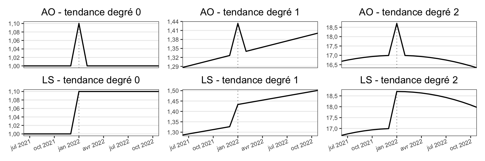
Estimation de la tendance-cycle avec des méthodes robustes aux points atypiques
Alain Quartier-la-Tente ![]()
Résumé
Cette étude s’intéresse à l’estimation en temps réel de la tendance-cycle autour de chocs et de points de retournement. Les moyennes mobiles linéaires classiquement utilisées pour l’estimation de la tendance-cycle, sensibles à la présence de points atypiques, sont comparées à des méthodes non-linéaires robustes. Nous proposons également une méthodologie pour étendre les moyennes mobiles de Henderson et de Musgrave afin de prendre en compte des informations extérieurs et ainsi construire des moyennes mobiles robustes à la présence de certains chocs. Nous décrivons comment estimer des intervalles de confiance pour les estimations issues de moyennes mobiles, ce qui permet de valider l’utilisation de ces nouvelle moyennes mobiles. En comparant les méthodes sur des séries simulées et réelles, nous montrons que : construire des moyennes mobiles robustes permet de réduire les révisions et de mieux modéliser les points de retournement autour de chocs, sans dégrader les estimations lorsqu’aucun choc n’est observé ; les méthodes non-linéaires robustes ne permettent pas d’extraire une composante tendance-cycle satisfaisante pour l’analyse conjoncturelle, avec parfois des révisions importantes.
Cette étude est entièrement reproductible et tous les codes utilisés sont disponibles sous https://github.com/AQLT/robustMA.
Mots clés : séries temporelles, tendance-cycle, désaisonnalisation, points de retournement.
Abstract
This study focuses on the real-time estimation of the trend-cycle around shocks and turning points. The linear moving averages classically used for estimating the trend-cycle, which are sensitive to the presence of atypical points, are compared with robust non-linear methods. We also propose a methodology for extending the Henderson and Musgrave moving averages to take account of external information and thus construct moving averages that are robust to the presence of certain shocks. We describe how to estimate confidence intervals for estimates derived from moving averages, thereby validating the use of these new moving averages. By comparing the methods on simulated and real series, we show that: building robust moving averages makes it possible to reduce revisions and better model turning points around shocks, without degrading the estimates when no shock is observed; robust non-linear methods do not make it possible to extract a trend-cycle component that is satisfactory for economic analysis, with sometimes significant revisions.
This study is fully reproducible and all the codes used are available under https://github.com/AQLT/robustMA.
Keywords: time series, trend-cycle, seasonal adjustment, turning points.
JEL Classification: C22, E32.
1 Introduction
L’analyse du cycle économique, et en particulier la détection rapide des points de retournement, est un sujet de première importance dans l’analyse de la conjoncture économique. Les séries chronologiques se décomposent en trois composantes : les effets saisonniers et les effets de calendrier, la tendance-cycle (permettant d’analyser les points de retournement) et l’irrégulier (le bruit lié à des erreurs d’échantillonnage, chocs économiques, etc.). Pour l’analyse conjoncturelle, les indicateurs économiques sont généralement uniquement corrigés des variations saisonnières et des jours ouvrables, laissant ainsi l’effet combiné de la tendance-cycle et de l’irrégulier. Toutefois, lorsque l’irrégulier est trop élevé, il peut être nécessaire d’effectuer un lissage supplémentaire afin d’analyser directement la composante tendance-cycle. Par construction, les méthodes d’extraction de tendance-cycle sont étroitement liées aux méthodes de désaisonnalisation. En effet, afin d’estimer la composante saisonnière, les algorithmes de désaisonnalisation estiment préalablement une composante tendance-cycle. Ainsi, même si les méthodes d’extraction de tendance-cycle sont généralement appliquées sur des séries corrigées des variations saisonnières, l’estimation de ces séries dépend également également des méthodes d’estimation de la tendance-cycle.
Les moyennes mobiles, ou les filtres linéaires, sont omniprésents dans les méthodes d’extraction du cycle économique et d’ajustement saisonnier. Par exemple, la méthode de désaisonnalisation X-11 (Ladiray et Quenneville 2011), utilisée dans le logiciel X-13ARIMA-SEATS (Monsell 2007), utilise des moyennes mobiles pour estimer les principales composantes d’une série chronologique. Au centre de la série, des filtres symétriques sont appliqués (utilisation d’autant de points dans le passé et dans le futur et le même poids est associé aux observations passées et futures). Pour l’extraction de la tendance-cycle, le filtre symétrique le plus connu est celui de Henderson (1916), notamment utilisé dans l’algorithme de désaisonnalisation X-13ARIMA. En revanche, pour les estimations en temps réel, en raison de l’absence d’observations futures, toutes ces méthodes doivent s’appuyer sur des filtres asymétriques pour estimer les points les plus récents. Par exemple, pour l’extraction de la tendance-cycle tendances-cycles, X-11 utilise le filtre symétrique de Henderson et les filtres asymétriques de Musgrave (1964) sur une série étendue utilisant un modèle ARIMA. Comme les valeurs prédites sont des combinaisons linéaires des valeurs passées, cela revient à appliquer des moyennes mobiles asymétriques à la fin de la série.
Ces moyennes mobiles, comme tout opérateur linéaire, sont sensibles à la présence de points atypiques. L’application directe des méthodes peut donc conduire à des estimations biaisées, du fait de leur présence. alors que les méthodes de désaisonnalisation (comme X-13ARIMA-SEATS) ont un module de correction des points atypiques.
L’objectif de cette étude est d’étudier et de comparer différentes approches permettant l’extraction de tendance-cycle en temps-réel. Nous décrivons également construire des moyennes mobiles linéaires, associées aux moyennes mobiles de Henderson et de Musgrave, qui prennent en compte des informations extérieures, permettant notamment de modéliser des chocs et donc de les rendre robustes à ces derniers. La modélisation retenue peut être validée par la construction d’intervalles de confiance. Ces moyennes mobiles sont également comparées à des méthodes non-linéaires robustes.
Après une description des méthodes utilisées pour extraire la tendance-cycle (section 2), elles sont comparées sur des séries simulées et réelles autour de chocs et de points de retournement (section 3). Nous montrons alors que les moyennes mobiles robustes permettent, par rapport aux moyennes mobiles classiques, de réduire les révisions et de mieux modéliser les points de retournement autour de chocs (par exemple pendant la crise financière de 2008 ou le COVID-19), sans dégrader les estimations lorsqu’aucun choc n’est observé. Les modélisations utilisées pour les méthodes non-linéaires robustes ne permettent pas d’extraire une composante tendance-cycle satisfaisante pour l’analyse conjoncturelle, avec parfois des révisions importantes.
2 Méthodologie
L’hypothèse de base utilisée dans les méthodes de décomposition de séries temporelles est que la série chronologique observée, \(y_t\), peut être décomposée en une composante de signal \(\mu_t\) et une composante erratique \(\varepsilon_t\) (appelée composante irrégulière) : \[ f(y_t)=\mu_t+\varepsilon_t \] où \(f\) désigne une transformation appropriée (généralement logarithmique ou aucune transformation). Pour simplifier les notations ultérieures, \(y_t\) désignera la série observée transformée. La composante de bruit \(\varepsilon_t\) est généralement supposée être un bruit blanc. En supposant que la série chronologique initiale est désaisonnalisée (ou sans saisonnalité), le signal \(\mu_t\) représente la tendance (variations sur une longue période) et le cycle (mouvements cycliques superposés à la tendance à long terme), estimés ici conjointement et appelé tendance-cycle \(TC_t\). L’estimation de la composante tendance-cycle permet faciliter l’analyse des retournements conjoncturels dans le cycle classique (également appelé cycle des affaires)1. On parle de point de retournement lorsque l’on passe d’une phase de récession (diminutions successives) à une phase d’expansion de l’économie (augmentations successives) : on parle alors de redressement ou, dans le cas contraire, de ralentissement. Même si plusieurs formules peuvent être utilisées pour définir ces phases, la définition de Zellner, Hong, et Min (1991) est généralement utilisée pour déterminer les points de retournement : on a un point de retournement à la date \(t\) lorsque \(TC_{t-3}\geq TC_{t-2}\geq TC_{t-1}<TC_t\leq TC_{t+1}\) (redressement) ou \(TC_{t-3}\leq TC_{t-2}\leq TC_{t-1}>TC_t\geq TC_{t+1}\) (ralentissement).
La composante tendance-cycle est généralement estimée de manière locale. En effet, autour d’un voisinage \(h\) de \(t\), cette composante peut être approximée localement par un polynôme de degré \(d\) : \[ TC_{t+i} = \sum_{j=0}^d\beta_j{i}^j+\xi_{t+i}\quad\forall i\in\{-h,-h+1,\dots,t+h\} \] avec \(\xi_t\) un processus stochastique non corrélé avec \(\varepsilon_t\) représentant l’erreur d’approximation. Même si certains articles modélisent \(\xi_t\) et \(\varepsilon_t\) séparément (voir par exemple Gray et Thomson 2002), une hypothèse habituelle, utilisée dans cet article, est de rassembler \(\xi_t\) et \(\varepsilon_t\)2. Ainsi, la tendance-cycle \(TC_t\) est considérée comme déterministe et modélisée localement comme une tendance polynomiale de degré \(d\). Les coefficients \((\beta_0,\dots,\beta_d)\) peuvent être estimés par la méthode des moindres carrés pondérés. L’estimation \(\hat \beta_0\) fournit l’estimation du cycle de tendance \(\widehat{TC}_t\) et on peut montrer que cela équivaut à appliquer une moyenne mobile. Cette moyenne mobile est généralement symétrique (\(\widehat{TC}_t\) est estimée en utilisant autant d’observation avant et après \(t\)) mais pour l’estimation des derniers points (lorsque l’on ne peut pas utiliser autant d’observations avant et après \(t\)) il est nécessaire de s’appuyer sur des moyennes mobiles ad hoc qui sont asymétriques.
L’estimation de \(\widehat{TC}_t\) étant faite par un méthode linéaire, elle est sensible à la présence de points atypiques qui peuvent notamment entraîner des révisions importantes. C’est par exemple le cas pendant la crise du COVID-19 qui a conduit Statistiques Canada et Australian Bureau of Statistics à suspendre la publication des tendances-cycles pendant cette période. Lors de périodes de fortes « turbulences » (comme la crise du COVID-19) où les points atypiques sont importants, les estimations directes de la tendance-cycle peuvent être biaisées. Comme notamment discuté par Matthews (2022), différentes stratégies peuvent alors être adoptées :
Ne pas publier les estimations pendant cette période : c’est ce qui est fait par l’Australian Bureau of Statistics pour la période du COVID-19 en ne publiant pas d’estimation tendance-cycle entre avril 2020 et mars 2022.
Estimer les points atypiques avec un modèle RegARIMA, estimer la tendance-cycle sur la série corrigée et « réintroduire » les effets corrigés sur la tendance-cycle. L’inconvénient de cette approche est que l’estimation des points atypiques dépend du modèle ARIMA utilisé et de la période d’estimation. Si le modèle est réestimé à chaque nouvelle observation, la tendance-cycle peut donc potentiellement être révisée pendant de nombreuses périodes. Par exemple, Ladiray et Quartier-la-Tente (2018) montrent que dans la majorité des cas il faut attendre au moins 3 ans pour que l’estimation du coefficient associé à une rupture converge. C’est l’approche privilégiée par l’Australian Bureau of Statistics lors de ruptures dans la tendance (Trewin 2003).
Estimer la tendance-cycle sur l’ensemble de la période et remplacer les données estimées après la rupture par celles estimées en commençant la série après la rupture (série segmentée d’un côté). L’inconvénient de cette approche est que les estimations avant la rupture vont être biaisées par la présence du choc et que celles après la rupture reposent sur des moyennes mobiles asymétriques (avec un biais plus important que les moyennes mobiles symétriques utilisées pour les estimations finales, et peuvent créer un déphasage, c’est-à-dire un décalage dans les points de retournement).
Diviser la série en deux au niveau de la rupture et estimer la tendance-cycle sur chaque segment (série segmentée des deux côtés). L’inconvénient de cette approche est que les estimations avant la rupture et après la rupture reposent sur des moyennes mobiles asymétriques (avec les mêmes inconvénients que précédemment). C’est l’approche privilégiée par Statistique Canada pendant le COVID-19 (@ Matthews 2022).
L’objectif de cet article est d’étudier des approches alternatives à celles de Matthews (2022). D’une part en étudiant les estimations en temps réel de méthodes non-linéaires robustes à la présence de points (section 2.1) ; d’autre part en les comparant aux estimations des moyennes mobiles classiques (section 2.2) et en proposant une méthode de construction de moyennes mobiles linéaires robustes (section 2.3). Nous montrons également comment construire des intervalles de confiance pour les estimations issues de moyennes mobiles (section 2.4), ce qui permet de valider le choix de construction d’une moyenne mobile linéaire robuste.
2.1 Méthodes robustes
Dans cette étude nous étudions six méthodes robustes d’estimation locale de la moyenne implémentées dans la fonction robfilter::robreg.filter() (Fried, Schettlinger, et Borowski 2024). Dans le package robfilter, la tendance-cycle est supposée être localement linéaire : \[
y_{t+i}=\underbrace{\beta_{0,t}+\beta_{1,t}i}_{TC_{t+i}}+\varepsilon_{t,i}
\] On a donc \(\widehat{TC}_t = \hat\beta_{0,t}\) et l’on note \(r_{t+i}= y_{t+i}- (\beta_{0,t}+ \beta_{1,t}i)\).
Les différentes méthodes étudiées sont :
- Médiane mobile (MED) :
\[ \widehat{TC}_t = \underset{i=-h,\dots,h}{\med}y_{t+i}. \]
Régression médiane répétée — Repeated Median (RM) (Siegel 1982) \[ \hat{\beta}_{1,t}= \underset{i=-h,\dots,h}{\med} \left\{ \underset{i\ne j}{\med}\frac{y_{t+i}-y_{t+j}}{i-j} \right\} \] et \[ \widehat{TC}_t= \underset{i=-h,\dots,h}{\med} \left\{ y_{t+i}-i\hat{\beta}_{1,t} \right\}. \]
Régression des moindres carrés médians — Least Median of Squares (LMS) (Peter J. Rousseeuw 1984) : \[ (\widehat{TC}_t,\hat\beta_{1,t})= \underset{\beta_{0,t},\beta_{1,t}}{\argmin} \left\{ \underset{i=-h,\dots,h}{\med}r^2_{t+i} \right\}. \]
Régression des moindres carrés élagués — Least Trimmed Squares (LTS) (P. Rousseeuw 1985) : \[ (\widehat{TC}_t,\hat\beta_{1,t})= \underset{\beta_{0,t},\beta_{1,t}}{\argmin} \left\{ \sum_{i=-h}^h r^2_{t+i} \right\}. \]
Régression des moindres quartiles différenciés — Least Quartile Difference (LQD) (Christophe Croux et Hössjer 1994) : \[ \hat\beta_{1,t}=\underset{\beta_{1,t}}{\argmin} Q_{2h+1}(r_{t-h},\dots,r_{t+h}) \] avec \[ Q_{2h+1}(r_{t-h},\dots,r_{t+h}) = \left\{ |r_i-r_j|;i<j \right\}_{\binom{h_p}{2}:\binom{2h+1}{2}} \] le quantile d’ordre \(\binom{h_p}{2}\) sur les \(\binom{2h+1}{2}\) éléments de l’ensemble \(\{|r_i-r_j|;i<j\}\) et \(h_p=[(2h+1+p+1)/2]\) avec \(p=1\) le nombre de régresseurs (hors constante). La fonction objectif ne dépendant pas de la constante, elle est estimée a posteriori par exemple en utilisant la formule : \[ \widehat{TC}_t = \underset{i=-h,\dots,h}{\med}y_{t+i}-\hat \beta_{1,t}i. \]
Régression profonde — Deepest Regression (DR) (Peter J. Rousseeuw et Hubert 1999) \[ (\widehat{TC}_t,\hat\beta_{1,t})=\underset{\tilde\beta_{0},\tilde\beta_{1}}{\argmax}\left\{ rdepth(\tilde\beta_{0},\tilde\beta_{1}) \right\} \] où la profondeur de la régression — regression depth (\(rdepth\)) — d’un ajustement \((\tilde\beta_{0},\tilde\beta_{1})\) est définie comme : \[ rdepth(\tilde\beta_{0},\tilde\beta_{1}) = \underset{-h\leq i\leq h}{\min} \left\{ \min \left\{ L^+(i) + R^-(i);R^+(i) + L^-(i) \right\}\right\} \] avec : \[ \begin{cases} L^+(i) = L^+_{\tilde\beta_{0},\tilde\beta_{1}}(i) = cardinal \left\{ j\in\{-h,\dots,i\} : r_j(\tilde\beta_{0},\tilde\beta_{1})\leq 0 \right\} \\ R^-(i) = R^-_{\tilde\beta_{0},\tilde\beta_{1}}(i) = cardinal \left\{ j\in\{i+1,\dots,h\} : r_j(\tilde\beta_{0},\tilde\beta_{1})< 0 \right\} \end{cases} \] et \(L^-(i)\) et \(R^+(i)\) définis de manière analogue.
Pour les estimations intermédiaires (i.e. : lorsque pour estimer la tendance-cycle à la date \(t\) on ne possède pas \(h\) observations avant ou après \(t\)), le package robfilter extrapole les données à partir du dernier modèle estimé. C’est-à-dire que si les données observées sont \(y_1, \dots, y_n\), alors pour \(q\in \{1,\dots, 6\}\) : \[
\widehat{TC}_{n-h+q} = \widehat{TC}_{n-h}+q\times\hat\beta_{1,n-h}.
\] Pour la médiane mobile, cela revient à prolonger par la dernière valeur connue. Cette méthode n’est pas pertinente pour l’analyse conjoncturelle puisque les points de retournement sont détectés avec \(h\) périodes de retard. Une approche alternative consiste à appliquer les mêmes modèles mais en n’utilisant que les observations disponibles (pour estimer \(\widehat{TC}_{n-h+1}\) on utilise les \(2h\) observations entre \(n-2h+1\) et \(n\), …, et pour estimer \(\widehat{TC}_{n}\) on utilise les \(h+1\) observations entre \(n-h\) et \(n\)). Cette approche n’est pas implémentée dans robfilter mais peut être obtenue en ajoutant \(h\) valeurs manquantes au début et à la fin de la série : c’est ce qui sera effectué dans cet article.
Dans le cadre de l’analyse conjoncturelle, il n’est généralement pas plausible de modéliser, autour des points de retournement, une tendance de degré 1. Il n’est toutefois pas possible de changer cela dans le package robfilter et il n’existe pas d’autre package permettant d’appliquer simplement toutes ces méthodes. Même si cette modélisation n’est pas toujours optimale, elle reste plausible dans la majorité des cas et la facilité d’utilisation de robfilter font de ces méthodes un bon point de comparaison aux moyennes mobiles linéaires classiquement utilisées pour l’estimation de la tendance-cycle et présentées dans la section suivante. Toutefois, les méthodes LTS et LMS sont implémentées dans le package MASS (Venables et Ripley 2002)3, il est possible de réimplémenter le processus d’estimation locale avec une tendance de degré 2, ce qui a été fait dans l’annexe 5.4.
2.2 Moyennes mobiles linéaires classiques
2.2.1 Moyenne mobile de Henderson et de Musgrave
Les moyennes mobiles classiques peuvent être obtenues par analogie avec la régression polynomiale locale. En reprenant les notations de Proietti et Luati (2008), on suppose que notre série chronologique \(y_t\) peut être décomposée en : \[ y_t=TC_t+\varepsilon_t, \] où \(TC_t\) est la tendance-cycle et \(\varepsilon_{t}\overset{i.i.d}{\sim}\mathcal{N}(0,\sigma^{2})\) est le bruit. La tendance-cycle \(TC_t\) est localement approchée par un polynôme de degré \(d\), de sorte que dans un voisinage \(h\) de \(t\) on a \(TC_t\simeq m_{t}\) avec : \[ \forall j\in\left\{-h,-h+1,\dots,h\right\},\: y_{t+j}=m_{t+j}+\varepsilon_{t+j},\quad m_{t+j}=\sum_{i=0}^{d}\beta_{i,t}j^{i}. \] En notation matricielle : \[ \underbrace{\begin{pmatrix}y_{t-h}\\ y_{t-(h-1)}\\ \vdots\\ y_{t}\\ \vdots\\ y_{t+(h-1)}\\ y_{t+h} \end{pmatrix}}_{\boldsymbol y_t}=\underbrace{\begin{pmatrix}1 & -h & h^{2} & \cdots & (-h)^{d}\\ 1 & -(h-1) & (h-1)^{2} & \cdots & (-(h-1))^{d}\\ \vdots & \vdots & \vdots & \cdots & \vdots\\ 1 & 0 & 0 & \cdots & 0\\ \vdots & \vdots & \vdots & \cdots & \vdots\\ 1 & h-1 & (h-1)^{2} & \cdots & (h-1)^{d}\\ 1 & h & h^{2} & \cdots & h^{d} \end{pmatrix}}_{\boldsymbol X}\underbrace{\begin{pmatrix}\beta_{0,t}\\ \beta_{1,t}\\ \vdots\\ \vdots\\ \vdots\\ \vdots\\ \beta_{d,t} \end{pmatrix}}_{\boldsymbol \beta_t}+\underbrace{\begin{pmatrix}\varepsilon_{t-h}\\ \varepsilon_{t-(h-1)}\\ \vdots\\ \varepsilon_{t}\\ \vdots\\ \varepsilon_{t+(h-1)}\\ \varepsilon_{t+h} \end{pmatrix}}_{\boldsymbol \varepsilon_t}. \tag{1}\]
L’estimation des paramètres \(\boldsymbol \beta_t\) peut être obtenue moindres carrés pondérés — weighted least squares (WLS) — à partir d’un ensemble de poids \((\kappa_j)_{-h\leq j \leq h}\) appelés noyaux. En notant \(\boldsymbol K=diag(\kappa_{-h},\dots,\kappa_{h})\) il vient \(\hat{\boldsymbol\beta_t}=(\transp{\boldsymbol X}\boldsymbol K\boldsymbol X)^{-1}\transp{\boldsymbol X}\boldsymbol K\boldsymbol y_t.\) Avec \(\boldsymbol e_1=\transp{\begin{pmatrix}1 &0 &\cdots&0 \end{pmatrix}}\), l’estimation de la tendance-cycle est : \[ \widehat{TC}_t=\widehat{\beta}_{0,t}=\transp{\boldsymbol e_{1}}\hat{\boldsymbol \beta_t}=\transp{\boldsymbol \theta}\boldsymbol y_t=\sum_{j=-h}^{h}\theta_{j}y_{t-j}\text{ avec }\boldsymbol \theta=\boldsymbol K\boldsymbol X(\transp{\boldsymbol X}\boldsymbol K\boldsymbol X)^{-1}\boldsymbol e_{1}. \tag{2}\] En somme, l’estimation de la tendance \(\hat{m}_{t}\) est obtenue en appliquant une moyenne mobile symétrique \(\boldsymbol \theta\) à \(y_t\).
On retrouve la moyenne mobile de Henderson avec \(d=2\) (ou \(d=3\)) et en utilisant les noyaux : \[ \kappa_{j}=\left[1-\frac{j^2}{(h+1)^2}\right] \left[1-\frac{j^2}{(h+2)^2}\right] \left[1-\frac{j^2}{(h+3)^2}\right]. \]
Pour le cas asymétrique, Proietti et Luati (2008) proposent une méthode générale pour construire les filtres asymétriques qui permet de faire un compromis biais-variance. Il s’agit d’une généralisation des filtres asymétriques de Musgrave (1964) (utilisés dans l’algorithme de désaisonnalisation X-13ARIMA). En récrivant l’équation 1 : \[
\boldsymbol y_t=\begin{pmatrix}\boldsymbol U &\boldsymbol Z\end{pmatrix}
\begin{pmatrix}\boldsymbol \gamma_t \\ \boldsymbol \delta_t\end{pmatrix}+
\boldsymbol \varepsilon_t =
\boldsymbol U\boldsymbol \gamma_t + \boldsymbol Z \boldsymbol \delta_t +\boldsymbol \varepsilon_t,
\quad
\boldsymbol \varepsilon_t\sim\mathcal{N}(0,\boldsymbol D).
\tag{3}\] où \([\boldsymbol U,\boldsymbol Z]\) est de rang plein et forme un sous-ensemble des colonnes de \(\boldsymbol X\). L’objectif est de trouver une moyenne mobile asymétrique \(\boldsymbol \theta^{(a)}\) qui minimise l’erreur quadratique moyenne de révision (à la moyenne mobile symétrique \(\boldsymbol \theta\)) sous certaines contraintes. Ces contraintes sont représentées par la matrice \(\boldsymbol U=\transp{\begin{pmatrix}\transp{\boldsymbol U_{p}}&\transp{\boldsymbol U_{f}}\end{pmatrix}}\) : \(\transp{\boldsymbol U_p}\boldsymbol \theta^{(a)}=\transp{\boldsymbol U}\boldsymbol \theta\) (avec \(\boldsymbol U_p\) la matrice \((h+q+1)\times (d+1)\) qui contient les observations de la matrice \(\boldsymbol U\) connues lors de l’estimation par le filtre asymétrique). C’est ce qui est implémenté dans la fonction rjd3filters::mmsre_filter() du package R rjd3filters (Palate et Quartier-la-Tente 2025).
Lorsque \(\boldsymbol U\) correspond aux \(d^*+1\) premières colonnes de \(\boldsymbol X\), \(d^*<d\), la contrainte consiste à reproduire des tendances polynomiales de degré \(d^*\). Cela introduit du biais (sur les tendances de degré \(d^*+1\) à \(d\)) mais réduit la variance. Le filtre de Musgrave se retrouve en modélisant une tendance localement linéaire (\(d=1\)), en imposant que \(\theta^{(a)}\) préserve les constantes (\(d^*=0\)) et en prenant le filtre d’Henderson comme filtre symétrique. C’est-à-dire que l’on a \(\boldsymbol U=\transp{\begin{pmatrix}1&\cdots&1\end{pmatrix}}\), \(\boldsymbol Z=\transp{\begin{pmatrix}-h&\cdots&+h\end{pmatrix}}\), \(\boldsymbol \delta_t=\delta_{1,t}\), \(\boldsymbol D=\sigma^2\boldsymbol I\). Ce filtre dépend du rapport \(\lvert\delta_{1,t}/\sigma\rvert\) (modélisant le biais), qui est à fixer par l’utilisateur. En supposant que la tendance est linéaire et le biais constant (\(\delta_{1,t}=\delta_1\)), ce rapport est lié à l’I-C ratio \(R=\frac{\bar{I}}{\bar{C}}=\frac{\sum\lvert I_t-I_{t-1}\rvert}{\sum\lvert C_t-C_{t-1}\rvert}\) (et l’on a \(\delta_1/\sigma=2/(R\sqrt{\pi})\)), qui est notamment utilisé dans X-11 pour déterminer la longueur de la moyenne mobile de Henderson à utiliser. Pour des données mensuelles :
Si le rapport est élevé (\(3,5< R\)), un filtre symétrique à 23 termes est utilisé (pour éliminer plus de bruit) et le rapport \(R=4,5\) est utilisé dans X-11 pour définir le filtre de Musgrave.
Si le rapport est faible (\(R<1\)), un filtre symétrique à 9 termes est utilisé et le rapport \(R=1\) est utilisé dans X-11 pour définir le filtre de Musgrave.
Dans le cas contraire (\(1\leq R \leq 3,5\), la plupart des cas), un filtre symétrique à 13 termes est utilisé et le rapport \(R=3,5\) est utilisé dans X-11 pour définir le filtre de Musgrave.
Dans cet article, seules des séries mensuelles sont étudiés et le filtre de Henderson à 13 termes sera utilisé comme filtre symétrique. Par simplification et par cohérence avec ce qui est utilisé dans X-11, le ratio \(\delta_1/\sigma\) sera fixé de sorte à avoir \(R=3,5\). C’est également ce qui est fait par l’Australian Bureau of Statistics (Trewin 2003). Toutefois, comme notamment montré dans Quartier-la-Tente (2024), une paramétrisation locale de ce paramètre pourrait être préférée.
Par simplification, dans cette étude on parle d’estimation via la moyenne mobile de Henderson pour désigner l’utilisation des moyennes mobiles de Henderson pour l’esitmation finale et des moyennes mobiles de Musgrave pour les estimations intermédiaires. Les coefficients des différentes moyennes mobiles étudiées dans cet article sont représentés dans l’annexe 5.1.
2.2.2 Filtres cascade
Les moyennes mobiles étant des opérateurs linéaires, ils sont sensibles à la présence de points atypiques. Du fait de leur présence, l’application directe des méthodes peut donc conduire à des estimations biaisées alors que les méthodes de désaisonnalisation (comme la méthode X-13ARIMA) ont un module de correction des points atypiques. Par ailleurs, comme notamment montré par Dagum (1996), le filtre symétrique final utilisé par X-11 pour extraire la tendance-cycle (et donc celui indirectement utilisé lorsqu’on applique les méthodes sur les séries désaisonnalisées) laisse passer environ 72 % des cycles de 9 ou 10 mois (généralement associés à du bruit plutôt qu’à la tendance-cycle). Les filtres asymétriques finaux amplifient même les cycles de 9 ou 10 mois. Cela peut avoir pour conséquence l’introduction d’ondulations indésirables, c’est-à-dire la détection de faux points de retournement. Ce problème est réduit par la correction des points atypiques (ces cycles étant considérés comme de l’irrégulier). C’est ainsi que le Nonlinear Dagum Filter (NLDF) a été développé et consiste à :
appliquer l’algorithme de correction des points atypiques de X-11 sur la série désaisonnalisée, puis la prolonger par un modèle ARIMA ;
effectuer une nouvelle correction des points atypiques en utilisant un seuil bien plus strict et appliquer ensuite le filtre symétrique de 13 termes. En supposant une distribution normale cela revient à modifier 48 % des valeurs de l’irrégulier.
Les cascade linear filter (CLF, Dagum et Luati 2009), correspondent à une approximation des NLDF en utilisant un filtre de 13 termes et lorsque les prévisions sont obtenus à partir d’un modèle ARIMA(0,1,1) où \(\theta=0,40.\) De manière similaire, des moyennes mobiles asymétriques, Asymmetric Linear Filter (ALF), peuvent être construites.
C’est la moyenne mobile CLF qui est utilisée par Statistique Canada pour l’estimation de la tendance-cycle4. Pour l’estimation en temps réel, Statistique Canada utilise la méthode « couper-et-normaliser » qui consiste à recalculer les poids, à partir de la moyenne mobile symétrique, en n’utilisant que les poids associées aux observations disponibles (couper) et en renormalisant pour que la somme des coefficients soit égale à 1 (normaliser). C’est l’approche qui sera utilisé dans cet article (plutôt que l’utilisation des ALF).
Remarque. Les CLF ne préservent, localement, que les droites (tendances de degré 1) et les moyennes mobiles asymétriques associées que les constantes (tendances de degré 0). En revanche la moyenne mobile de Henderson préserve les tendances locales de degré 3 et les moyennes mobiles de Musgrave que les constantes.
2.3 Construction de moyennes mobiles robustes
Une autre façon de construire des moyennes mobiles robustes aux points atypiques est d’exploiter l’approche polynomiale locale présentée dans la section 2.2.1. Pour la construire la moyenne mobile utilisée pour l’estimation finale de la tendance-cycle, il suffit pour cela d’ajouter dans l’équation 1 un ou plusieurs régresseurs \(\boldsymbol O_t\) pour prendre en compte l’effet du point atypique modélisé : \[ y_{t+j}=\sum_{i=0}^{d}\beta_{i,t}j^{i} + \boldsymbol O_{t+j} \boldsymbol\zeta_t+\varepsilon_{t+j}. \]
On a alors : \[ \widehat{TC}_t=\transp{\boldsymbol \theta_t^{(r)}}\boldsymbol y_t=\sum_{j=-h}^{h}\theta_{j,t}^{(r)}y_{t-j} \] avec \[ \boldsymbol \theta_t^{(r)}=\boldsymbol K\begin{pmatrix}\boldsymbol X & \mathcal O_{t}\end{pmatrix}\left(\transp{\begin{pmatrix}\boldsymbol X & \mathcal O_{t}\end{pmatrix}}\boldsymbol K \begin{pmatrix}\boldsymbol X & \mathcal O_{t}\end{pmatrix}\right)^{-1}\boldsymbol e_{1} \text{ et } \mathcal O_{t} = \begin{pmatrix} \boldsymbol O_{t-h} \\ \vdots\\\boldsymbol O_{t+h} \end{pmatrix}. \]
Le filtre de Henderson peut être obtenu par approximation locale d’un polynôme de degré 2. Puisqu’il est symétrique, il préserve également les tendances de degré 3 et peut également être obtenu par approximation locale d’un polynôme de degré 3. En revanche, même si la moyenne mobile \(\boldsymbol \theta_t^{(r)}\) est centrée (autant de points avant et après \(t\) sont utilisés pour estimer \(\widehat{TC}_t\)), elle n’est plus forcément symétrique (pour au moins un \(i\in\{1,\dots,h\}\) on a \(\theta_{-i,t}^{(r)}\ne\theta_{i,t}^{(r)}\)). Pour construire une moyenne mobile robuste associée au filtre de Henderson, le choix entre modélisation d’un polynôme local de degré 2 (\(d=2\)) ou 3 (\(d=3\)) aura donc un impact sur la moyenne mobile finale. Dans cet article nous utiliserons par convention la valeur \(d=3\) afin de préserver sans biais les mêmes tendances que la moyenne mobile de Henderson.
Pour la construction des moyennes mobiles asymétriques, le même principe est appliqué à l’équation 3 en estimant sans biais \(\boldsymbol\zeta_t\) : \[ \boldsymbol y_t=\begin{pmatrix}\boldsymbol U & \mathcal O_{t}\end{pmatrix}\begin{pmatrix}\boldsymbol \gamma_t \\ \boldsymbol\zeta_t \end{pmatrix}+\boldsymbol Z\boldsymbol \delta_t+\boldsymbol \varepsilon_t,\quad \boldsymbol \varepsilon_t\sim\mathcal{N}(\boldsymbol 0,\boldsymbol D). \] La moyenne mobile asymétrique \(\boldsymbol \theta^{(a)(r)}_t\) est trouvée par minimisation de l’erreur quadratique moyenne de révision (à la moyenne mobile \(\boldsymbol \theta_t^{(r)}\)) sous contraintes. Ces contraintes sont représentées par la matrice \(\begin{pmatrix}\boldsymbol U & \mathcal O_{t}\end{pmatrix} = \begin{pmatrix}\boldsymbol U_{p} & \mathcal O_{p,t} \\\boldsymbol U_{f} & \mathcal O_{f,t} \end{pmatrix}\) : \[ \transp{\begin{pmatrix}\boldsymbol U_{p} & \mathcal O_{p,t} \end{pmatrix}}\boldsymbol \theta^{(a)}=\transp{\begin{pmatrix}\boldsymbol U & \mathcal O_{t}\end{pmatrix}}\boldsymbol \theta \]
Par convention, lorsque \(\mathcal O_{t}\) ou \(\mathcal O_{p,t}\) est la matrice nulle, on garde la modélisation de la section 2.2.1 (sans introduction de régresseur supplémentaire).
Dans cette étude, les deux types de points atypiques les plus couramment rencontrés dans l’analyse de données macroéconomiques sont étudiés :
Les points atypiques additifs (AO, additive outlier) : un choc ponctuelle à une date particulière puis un retour à la normal (grève, mesure exceptionnelle, erreur de mesure par exemple liée à de la non réponse, etc.). Le choc affecte donc l’irrégulier et ne devrait pas avoir d’impact sur la tendance-cycle. Si le choc apparaît à la date \(t_0\) il peut être modélisé par le régresseur \(O_t^{AO}=\1_{t=t_0}\) qui vaut \(1\) à la date \(t_0\) et \(0\) sinon.
Si l’on souhaite que le choc soit affecté à la tendance-cycle et non pas à l’irrégulier (par exemple pendant la période du COVID-19), il faut utiliser le régresseur \(O_{t+j}=O_{t+j}^{AO}=\1_{t+j= t_0}\) lorsque \(t< t_0\) ou \(t=t_0+h\) (estimations des points avant le choc et dernière moyenne mobile modifiée) et \(O_{t+j}=1-O_{t+j}^{AO}=\1_{t+j\ne t_0}\) lorsque \(t_0\leq t < t_0+h\) (estimations des points après le choc sauf dernière moyenne mobile modifiée). Une distinction est faite pour \(t=t_0+h\) car dans ce cas le régresseur \(\1_{t+j\ne t_0}\) est égal à \(\1_{t+j> t_0}\) ce qui revient à créer une rupture en niveau (cf infra) et introduit un pic indésirable à l’estimation en \(t_0+h\).Les ruptures en niveau (LS, level shift) : un changement soudain et durable du niveau moyen de la série (choc structurel, changement de politique économique, etc.). Le choc affecte donc la tendance-cycle et ne devrait pas avoir d’impact sur l’irrégulier. Si le choc est à la date \(t_0\) il peut être modélisé par le régresseur \(O_{t+j}=-\1_{t+j< t_0}\) si \(t\leq t_0\) (l’estimation de \(\beta_{0,t}\) ne prend pas en compte le choc en niveau) et \(O_{t+j}=\1_{t+j\geq t_0}\) si \(t_0<t\) (l’estimation de \(\beta_{0,t}\) prend en compte le choc en niveau).
Cette méthode a été implémentée dans la fonction publishTC::henderson_robust_smoothing() du package publishTC (Quartier-la-Tente 2025) qui permet de modéliser des chocs ponctuels (affectés à l’irrégulier ou à la tendance-cycle) et des ruptures en niveau (affectées à la tendance-cycle).
L’inconvénient de cette approche, par rapport aux méthodes robustes présentées dans la section 2.1, est que cela suppose de connaître la date et la nature du point atypique. Une approche en deux temps peut être utilisée :
Partir sur un a priori basé sur une information économique (ex : baisse attendue de l’économie au moment des confinements durant le COVID-19, hausse attendue suite à une mise en place d’une politique…) ou sur des modèles statistiques (comme le module de détection des points atypiques de X-13ARIMA-SEATS basé sur un modèle RegARIMA).
Valider la modélisation retenue en comparant l’intervalle de confiance de l’estimation de la tendance-cycle avec les moyennes mobiles de Henderson et de Musgrave avec l’estimation en utilisant les moyennes mobiles robustes. La section 2.4 décrit la méthodologie pour la construction d’intervalles de confiance pour des estimations basées sur des moyennes mobiles.
Toutefois, pour l’estimation en temps réel, sauf à avoir une information extérieure, il est difficile de distinguer un level shift (LS) d’un ou plusieurs additive outlier (AO) consécutifs. Le choix du type de point atypique aura une influence forte sur l’estimation (puisque les LS affectent la tendance-cycle et les AO l’irrégulier) et passer d’une spécification à l’autre entraînera des révisions importantes. Ces révisions seront même plus importantes que si, avant de décider de la bonne modélisation à adopter, les premières estimations avaient été faites avec des moyennes moyennes mobiles classiques.
Par rapport au préajustement des points atypiques par un modèle ad hoc, comme le module de pré-ajustement de X-13ARIMA basé sur un modèle RegARIMA, l’approche ici présentée a l’avantage de ne pas être dépendante de l’identification d’un modèle et de la période d’estimation (pas de biais lié à l’identification des paramètres ou à l’utilisation d’une période d’estimation trop courte ou trop longue).
Dans la suite ces moyennes mobiles seront appelées moyennes mobiles de Henderson ou de Musgrave robustes. Par simplification, nous appellerons également moyenne mobile de Henderson robuste l’utilisation des moyennes de mobiles de Henderson (pour l’estimation finale) et de Musgrave (pour les estimations intermédiaires) robustes construits selont la même méthodologie.
2.4 Construction d’intervalles de confiance pour des moyennes mobiles
Soit \(y_1,\dots,y_n\) une série chronologique observée. On suppose qu’elle peut être décomposée en \[ y_t=\mu_t+\varepsilon_t, \] où \(\mu_t\) est une composante déterministe à estimer et \(\varepsilon_{t}\overset{i.i.d}{\sim}\mathcal{N}(0,\sigma^{2})\) est le bruit.
Soit \(\boldsymbol\theta = \begin{pmatrix}\theta_{-p},\dots,\theta_f\end{pmatrix}\) une moyenne mobile permettant d’estimer la composante inobservable \(\mu_t\) (dans cette étude la tendance-cycle \(TC_t\)) à partir de \(y_t\). Cette estimation est donnée par \(\hat \mu_t = \sum_{i=-p}^{+f}\theta_iy_{t+i}.\)
Un intervalle de confiance de \(\mathbb E[\hat{\mu}_t]\) au seuil \(\alpha\) peut être calculé à partir de la formule : \[ I_t=\left[\hat{\mu}_t - |q_{\alpha/2}|\sqrt{\hat \sigma^2}\sqrt{\sum_{i=-p}^{+f}\theta_i^2}; \hat{\mu}_t + |q_{1-\alpha/2}|\sqrt{\hat \sigma^2}\sqrt{\sum_{i=-p}^{+f}\theta_i^2}\right] \tag{4}\] où \[ \hat\sigma^2=\frac{1}{(n-p-f)\left(1-2\theta_0^2+\sum_{i=-p}^{+f} \theta_i^2\right)}\sum_{t=p+1}^{n-f}(y_t-\widehat{\mu}_t)^2 \] et \(q_{\alpha/2}\) est le quantile d’ordre \(\alpha/2\) d’une certaine loi de Student. C’est un intervalle de confiance de \(\mu_t\) lorsque l’on a un estimateur sans biais de \(\mu_t\) (\(\mathbb E[\hat{\mu}_t]= \sum_{i=-p}^{+f}\theta_iy_{t+i}= \mu_t\)), ce qui n’est généralement pas le cas, mais le biais est négligeable lorsque la fenêtre \(p+f+1\) est petite.
Ces formules se retrouvent par analogie avec la régression polynomiale locale. En reprenant les notations de Loader (1999) pour la régression polynomiale locale et en adaptant à l’utilisation de moyennes mobiles, la variance \(\hat\sigma^2\) peut être estimée par la somme des carrés des résidus normalisés : \[ \hat\sigma^2=\frac{1}{(n-p-f)-2\nu_1+\nu_2}\sum_{t=p+1}^{n-f}(y_t-\widehat{\mu}_t)^2. \] \(n-p-f\) termes sont utilisés car avec la moyenne mobile \(\boldsymbol \theta\) seulement \(n-p-f\) observations peuvent être utilisées pour estimer \(\sigma^2\). \(\nu_1\) et \(\nu_2\) sont deux définitions de degrés de liberté d’une estimation locale (généralisation du nombre de paramètres d’un modèle paramétrique). Notons \(\boldsymbol H\) la matrice chapeau de taille \(n\times n\) permettant de faire correspondre les données aux valeurs estimées : \[ \begin{pmatrix} \hat{\mu}_1\\ \vdots \\ \hat{\mu}_n \end{pmatrix} = \boldsymbol H \boldsymbol Y \text{ avec } \boldsymbol Y = \begin{pmatrix} y_1\\ \vdots \\ y_n \end{pmatrix}. \] En considérant par convention que \(\hat\mu_1=\dots=\hat{\mu}_p=\hat\mu_{n-f+1}=\dots=\hat\mu_n=0\) (puisque l’on ne peut pas estimer ces quantités avec la moyenne mobile \(\boldsymbol \theta\)), on a donc : \[ \boldsymbol H=\begin{pmatrix} &&\boldsymbol0_{p\times n} \\ \theta_{-p} & \cdots & \theta_f & 0 & \cdots\\ 0 & \theta_{-p} & \cdots & \theta_f & 0 & \cdots \\ & \ddots &&&\ddots\\ 0 &\cdots&0& \theta_{-p} & \cdots & \theta_f \\ &&\boldsymbol0_{f\times n} \end{pmatrix}, \] où \(\boldsymbol 0_{p\times n}\) est la matrice de taille \(p\times n\) ne contenant que de zéros. On a : \[ \begin{cases} \nu_1 =\tr (\boldsymbol H) = (n-p-f)\theta_0\\ \nu_2 = \tr (\transp{\boldsymbol H}\boldsymbol H) = (n-p-f) \sum_{i=-p}^{+f} \theta_i^2 \end{cases}. \] Si les bruits \(\varepsilon_t\) sont indépendants et de variance \(\sigma^2\), alors : \[ \V{y_t-\hat{\mu}_t}=\sigma^2 - 2\underbrace{\cov{y_t}{\hat{\mu}_t}}_{=\theta_0\sigma^2} + \underbrace{\V{\hat{\mu}_t}}_{=\sigma^2\sum_{i=-p}^{+f} \theta_i^2} \] et l’on a donc : \[ \E{\hat\sigma^2}=\sigma^2 + \frac{1}{(n-p-f)-2\nu_1+\nu_2}\sum_{t=p+1}^{n-f}(\E{\hat \mu_t}-\mu_t)^2. \] L’estimateur \(\hat\sigma^2\) est donc sans biais si \(\hat\mu_t\) l’est aussi.
La somme des carrés des résidus peut s’écrire sous forme quadratique : \[ \sum_{t=p+1}^{n-f}(y_t-\widehat{\mu}_t)^2 = \transp{\boldsymbol Y}\boldsymbol \Delta\boldsymbol Y \] avec \({\boldsymbol Y} = \transp{\begin{pmatrix} y_1 & \cdots & y_n\end{pmatrix}}\) et : \[ \boldsymbol \Delta = \transp{(\boldsymbol I - \boldsymbol H)}(\boldsymbol I - \boldsymbol H\boldsymbol),\, \boldsymbol I = \begin{pmatrix} &\boldsymbol0_{p\times n} \\ \boldsymbol 0_{(n-p-f)\times p} &\boldsymbol I_{n-p-f} & \boldsymbol 0_{(n-p-f)\times f} \\ &\boldsymbol0_{f\times n} \end{pmatrix} \] et \(\boldsymbol I_{n-p-f}\) la matrice identité de taille \(n-p-f.\) On a donc : \[ \hat\sigma^2=\frac{1}{\tr{\boldsymbol \Delta}}\transp{\boldsymbol Y}\boldsymbol \Delta\boldsymbol Y. \] Si les bruits \(\varepsilon_t\) sont normalement distribués indépendants et \(\hat\sigma^2\), la distribution est : \[ \transp{\boldsymbol Y}\boldsymbol \Delta\boldsymbol Y\overset{\mathcal L}{=}\sigma^2\sum_{j=1}^n\lambda_jZ_j, \] où les \(\lambda_j\) sont les valeurs propres de \(\boldsymbol\Delta\) et les \(Z_j\) sont des lois indépendantes du chi-deux à 1 degré de liberté. Il vient : \[ \begin{cases} \E{\hat\sigma^2}=\sigma^2\frac{1}{\tr{\boldsymbol \Delta}}\underbrace{\sum_{j=1}^n\lambda_j}_{=\tr{\boldsymbol \Delta}}=\sigma^2\\ \V{\hat\sigma^2}=\sigma^4\frac{1}{\tr{(\boldsymbol \Delta)}^2}\sum_{j=1}^n2\lambda_j^2=2\sigma^4\frac{\tr(\boldsymbol \Delta^2)}{\tr(\boldsymbol \Delta)^2} \end{cases}. \] En notant \(\nu = \tr(\boldsymbol \Delta)^2 / \tr(\boldsymbol \Delta^2)\), on a donc : \[ \begin{cases} \E{\nu\frac{\hat\sigma^2}{\sigma^2}}=\nu\\ \V{\nu\frac{\hat\sigma^2}{\sigma^2}}=2\nu \end{cases}. \] Les deux premiers moments de \(\nu \hat\sigma^2/\sigma^2\) sont donc identiques à ceux d’un loi du chi-deux avec \(\nu\) degrés de liberté. La loi \(\hat\sigma^2\) étant difficile à calculer dans le cadre de la régression locale, on donc approximer sa distribution par une loi du chi-deux.
Puisque \(\V{\mu_t}=\sigma^2\sum_{i=-p}^{+f} \theta_i^2\), on retrouve la formule de l’intervalle de confiance de l’équation 4 : \[
\frac{\hat\mu_t-\E{\mu_t}}{\sqrt{\V{\mu_t}}}=\frac{\hat\mu_t-\E{\mu_t}}{\sqrt{\sigma^2\sum_{i=-p}^{+f} \theta_i^2}}
\text{ et }
\frac{\hat\mu_t-\E{\mu_t}}{\sqrt{\hat\sigma^2}\sqrt{\sum_{i=-p}^{+f} \theta_i^2}}\sim\mathcal{T}(\nu).
\] Le numérateur de \(\nu\) se calcule facilement puisque l’on a : \[
\tr(\boldsymbol \Delta) = (n-p-f)\left(1-2\theta_0+\sum_{i=-p}^{+f} \theta_i^2\right).
\] En revanche il est difficile d’avoir une formule simplifiée pour le dénominateur \(\tr(\boldsymbol \Delta^2).\) Ce dernier peut être calculé en reconstruisant la matrice \(\boldsymbol \Delta\) (produit de matrices de taille \(n\times n\)) ou, comme proposé dans cet article, par le produit d’une matrice de taille \(1\times (p+f+1)\) et d’une matrice de taille \((p+f+1)\times(p+f+1)\) pour réduire le temps de calcul (annexe 5.2) : \[
\tr(\boldsymbol \Delta^2)=(n-(p+f))L_0^2+2\sum_{k=1}^{p+f}(n-(p+f)-k)L_k^2
\] où \(L_0,\dots,L_{p+f}\) sont définis par : \[
\begin{pmatrix}w_{-p} & \cdots & w_f\end{pmatrix}
\begin{pmatrix}
w_{-p} &0 & 0 &\cdots& 0 \\
w_{-p+1} & w_{-p} & 0 & \ddots & \vdots \\
w_{-p+2} & w_{-p+1}& w_{-p} & \ddots & \vdots\\
\vdots & \vdots & \vdots & \ddots &\vdots \\
w_f & w_{f-1} & w_{f-2}&\ddots&w_{-p}\\
\end{pmatrix}=\begin{pmatrix} L_0 & \cdots & L_{p+f} \end{pmatrix}
\] avec \(\boldsymbol w = \begin{pmatrix}w_{-p},\dots,w_f\end{pmatrix}\) la moyenne mobile telle que \(w_0=1-\theta_0\) et \(w_i=-\theta_i\) pour \(i\ne0\). C’est la méthode de calcul utilisée par défaut dans rjd3filters. Le calcul de \(\nu\) peut aussi être approximé par \(\tr(\boldsymbol \Delta)\) (rjd3filters::confint_filter(exact_df = FALSE)) ce qui permet de réduire davantage le temps de calcul5.
Remarque. Lorsque l’estimation de la tendance-cycle est basée sur des moyennes mobiles construites à l’aide d’un régresseur externe (section 2.3), les formules ici présentées ne sont pas applicables puisque des moyennes mobiles différentes sont utilisées pour l’estimation finale. Pour la construction d’intervalles de confiance, le plus simple est alors de reconstruire la matrice \(\boldsymbol H.\) Pour les estimations récentes, lorsque des moyennes mobiles asymétriques sont utilisées, le calcul des intervalles de confiance nécessite la création d’une matrice \(\boldsymbol H\) fictive (qui correspondrait à la matrice utilisée si toutes les estimations étaient faites avec une moyenne mobile asymétrique). Toutefois, lorsque plusieurs outliers consécutifs sont utilisés dans le passé, la construction d’une moyenne mobile asymétrique robuste n’est pas toujours possible : dans ce cas il est possible d’utiliser par défaut la moyenne mobile asymétrique linéaire de référence (ce qui aurait donc pour effet d’augmenter la variance estimée).
Remarque. La matrice \(\boldsymbol H\) pourrait également être construite en complétant les \(p\) premières et \(f\) dernières lignes par les moyennes mobiles asymétriques utilisées. Toutefois, puisque les modèles sous-jacents aux moyennes mobiles asymétriques sont différents de ceux des moyennes mobiles symétriques (par exemple Musgrave modélise une tendance de degré 1 alors que Henderson modélise une tendance de degré 3), on peut supposer les variances différentes pour chaque moyenne mobile et estimer celles associées aux moyennes mobiles asymétriques en utilisant l’ensemble des données. C’est l’approche implémentée dans rjd3filters.
3 Résultats
Les différentes méthodes sont tout d’abord comparées sur des séries simulées (choc de 10 %, tendance de degré 0, 1 ou 2, section 3.1) puis sur des séries réelles (section 3.2).
3.1 Séries simulées
Afin d’illustrer les performances des différentes méthodes, les estimations sont comparées sur des séries simulées dans un cas extrême : lorsque l’irrégulier est nul. Trois tendances sont simulées, de degré 0, 1 ou 2, et un choc positif de 10 % est introduit en janvier 2022 : soit un choc ponctuel (additive outlier, affectant l’irrégulier) soit un choc permanent (level shift, affectant la tendance-cycle). Les séries simulées commencent en janvier 2018, soit 4 ans avant le choc afin de limiter l’impact des points atypiques sur le calcul des intervalles de confiance (puisque l’irrégulier est nul, l’intervalle de confiance est également nul avant l’introduction du choc). La figure 1 montre les différentes séries simulées.
Pour les chocs ponctuels (additive outlier, AO), lorsque la tendance est de degré 0, aucune des méthodes robustes n’est influencée par la présence de l’AO, tout comme la moyenne mobile de Henderson robuste (figure 2). Les estimations avec les moyennes mobiles de Henderson et CLF sont biaisées avec des révisions importantes à la date du choc, légèrement plus petites pour la méthode CLF. L’analyse des intervalles de confiance valident clairement la présence du point atypique (figure 3).
Lorsque la tendance est de degré 1 les résultats sont similaires sauf pour la médiane mobile qui sous-estime la tendance pour les estimations intermédiaires (figures 4 et 5). Comme notamment indiqué par Gather, Schettlinger, et Fried (2006), cela suggère d’utiliser des quantiles plus élevés que la médiane pour les estimations en temps réel avec les méthodes robustes. Un léger biais négatif s’observe pour la méthode de Henderson robuste : cela provient du fait que pour la création de ces moyennes mobiles la pente est fixé (ratio \(\delta_1/\sigma\) fixé et \(\sigma\) a priori fixé) à une valeur différente de la pente simulée. Cela suggère de préférer une paramétrisation locale de ce paramètre, comme proposé par Quartier-la-Tente (2024)6.
Lorsque la tendance est de degré 2, les résultats avec les moyennes mobiles sont similaires (révisions importantes autour du choc pour Henderson et CLF et faibles pour Henderson robuste, figures 6 et 7). Pour les méthodes robustes, les estimations finales reproduisent bien le retournement de tendance malgré le fait qu’elles ne modélisent qu’une tendance de degré 1. Pour les estimations en temps réel, les tendances sont surestimées mais les révisions faibles : cela s’explique par le faible degré de courbure de la série simulée et pourraient être minimisées en modélisant des tendances de degré supérieur (voir annexe 5.4 pour les résultats avec les méthodes LMS et LTS).
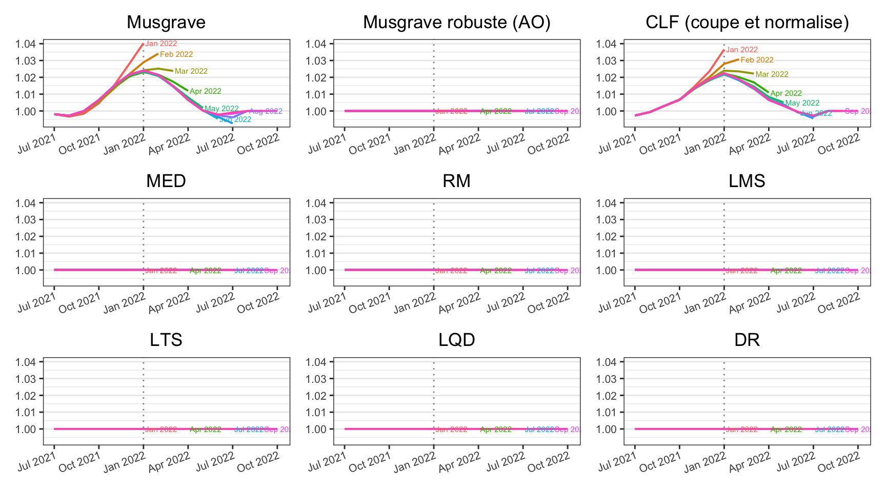
Note : Henderson : Henderson (estimation finale) et Musgrave (estimations intermédiaires) ; Henderson robuste : moyennes mobiles robustes de Henderson (estimation finale) et de Musgrave (estimations intermédiaires) ; CLF : cascade linear filter (estimation finale) et méthode « couper-et-normaliser » (estimations intermédiaires) ; MED : Médiane mobile ; RM : médiane répétée ; LMS : moindres carrés médians ; LTS : moindres carrés élagués ; LQD : moindres quartiles différenciés ; DR : Régression profonde.
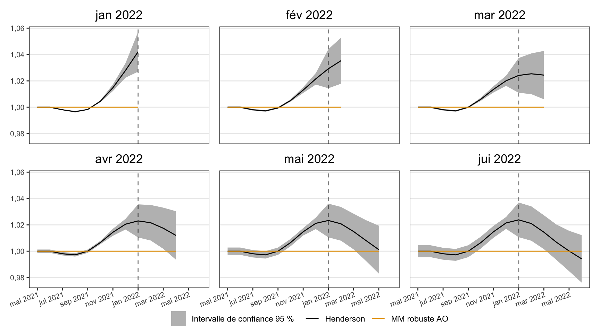
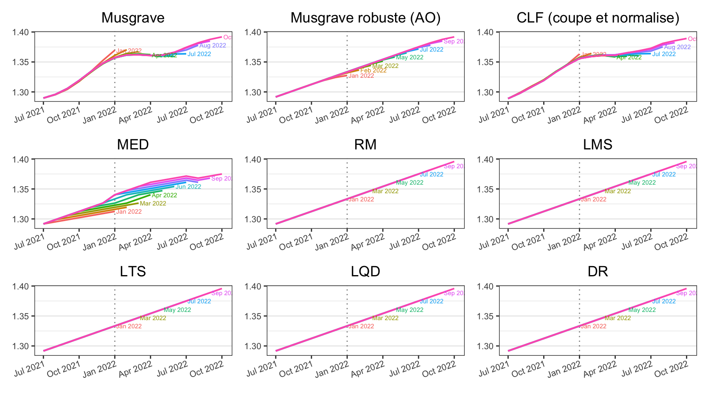
Note : Henderson : Henderson (estimation finale) et Musgrave (estimations intermédiaires) ; Henderson robuste : moyennes mobiles robustes de Henderson (estimation finale) et de Musgrave (estimations intermédiaires) ; CLF : cascade linear filter (estimation finale) et méthode « couper-et-normaliser » (estimations intermédiaires) ; MED : Médiane mobile ; RM : médiane répétée ; LMS : moindres carrés médians ; LTS : moindres carrés élagués ; LQD : moindres quartiles différenciés ; DR : Régression profonde.
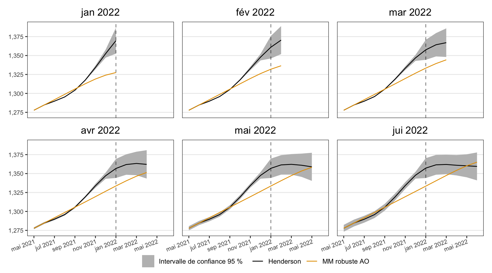
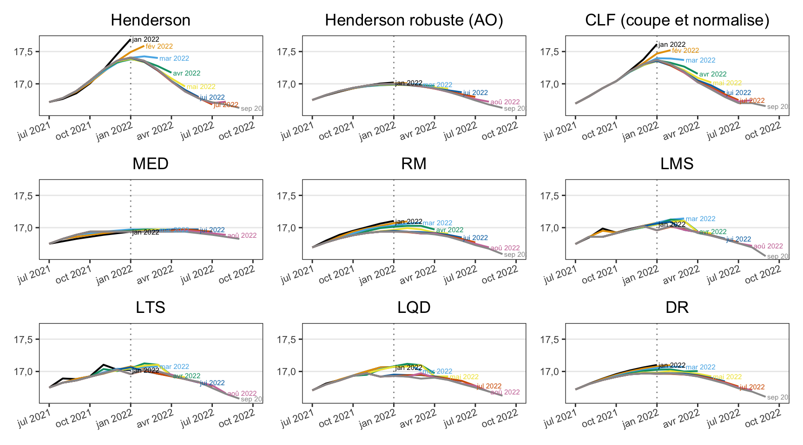
Note : Henderson : Henderson (estimation finale) et Musgrave (estimations intermédiaires) ; Henderson robuste : moyennes mobiles robustes de Henderson (estimation finale) et de Musgrave (estimations intermédiaires) ; CLF : cascade linear filter (estimation finale) et méthode « couper-et-normaliser » (estimations intermédiaires) ; MED : Médiane mobile ; RM : médiane répétée ; LMS : moindres carrés médians ; LTS : moindres carrés élagués ; LQD : moindres quartiles différenciés ; DR : Régression profonde.
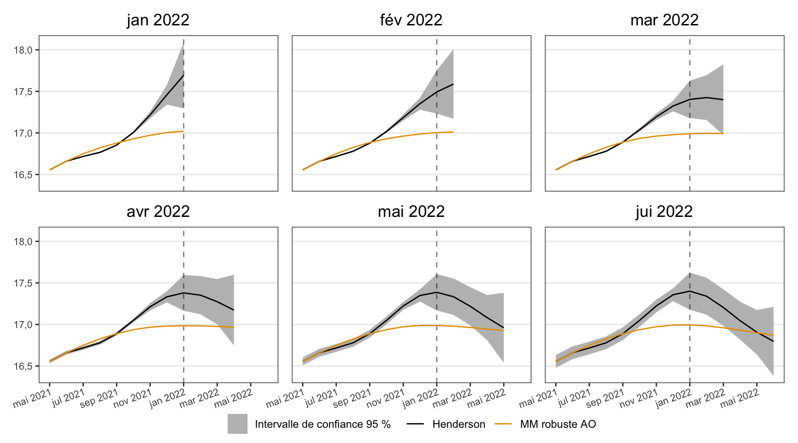
Pour les chocs permanents (level shift, LS), à l’exception de la régression profonde (DR) et de la régression médiane répétée (RM), les estimations finales de la tendance-cycle avec les méthodes robustes ne sont pas influencées par la présence du choc (figures 8, 10 et 12). En revanche, aucune des estimations intermédiaires ne prend en compte le changement de niveau à la bonne date : il faut attendre l’estimation de juin 2022 pour que le changement de niveau soit pris en compte à la bonne date pour la méthode LQD et juillet 2022 (soit l’estimation finale) pour les autres méthodes, même lorsque la tendance est de degré 0. Modéliser, dans ces méthodes, une tendance de degré 2 ne change pas ce résultat (annexe 5.4). Cela suggère encore d’utiliser des quantiles plus élevés que la médiane pour les estimations en temps réel.
Les moyennes mobiles linéaires classiques (Henderson et CLF) donnent des résultats similaires : la rupture en niveau est lissée, les points avant le choc sont donc sur-estimés et ceux après le choc sous-estimés. Il y a également d’importantes révisions pour la première estimation de janvier 2022 (date du choc). Il n’y a en revanche quasiment aucune révision pour les moyennes mobile de Henderson robuste à un choc permanent en janvier 2022.
Les intervalles de confiance des estimations de la moyenne mobile de Henderson sont comparés à la moyenne mobile de Henderson robuste à un choc permanent en janvier 2022 ou à un choc ponctuel en janvier et février 2022 (figures 9, 11 et 13). Cela permet de simuler le cas où on ne sait pas, en temps réel, trancher sur la nature du choc : soit un choc permanent, soit un choc ponctuel (lorsque l’on se place en janvier 2022), soit deux chocs ponctuels (lorsque l’on se place en février 2022). En mars 2022, l’observation de trois chocs de même ampleur confirme qu’il s’agit d’un choc permanent et non ponctuel. Si l’on s’est trompé dans la nature du choc, jusqu’en février 2022 les révisions sont nulles pour les estimations avant le choc mais importantes pour celles après (janvier et février, puisque le choc est affecté à l’irrégulier et non pas à la tendance-cycle).
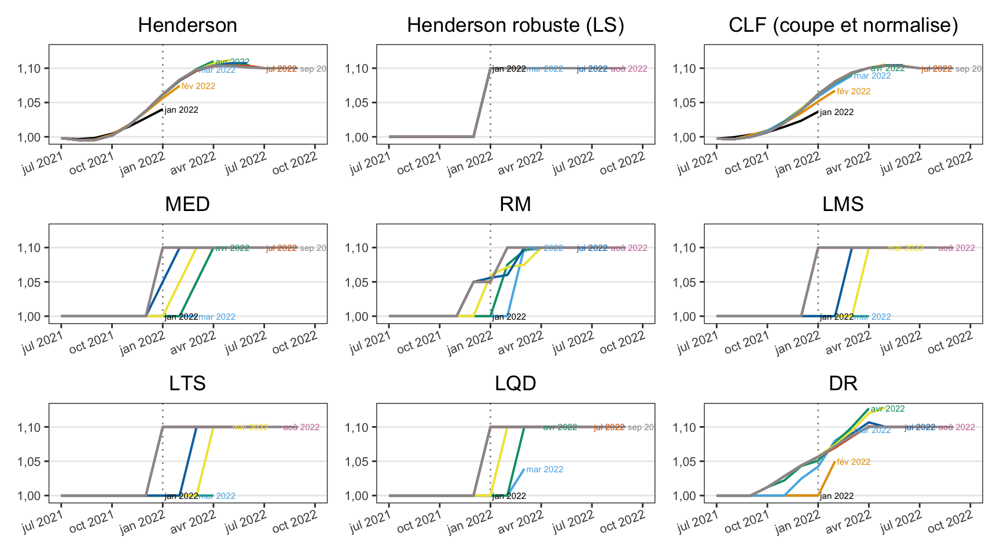
Note : Henderson : Henderson (estimation finale) et Musgrave (estimations intermédiaires) ; Henderson robuste : moyennes mobiles robustes de Henderson (estimation finale) et de Musgrave (estimations intermédiaires) ; CLF : cascade linear filter (estimation finale) et méthode « couper-et-normaliser » (estimations intermédiaires) ; MED : Médiane mobile ; RM : médiane répétée ; LMS : moindres carrés médians ; LTS : moindres carrés élagués ; LQD : moindres quartiles différenciés ; DR : Régression profonde.
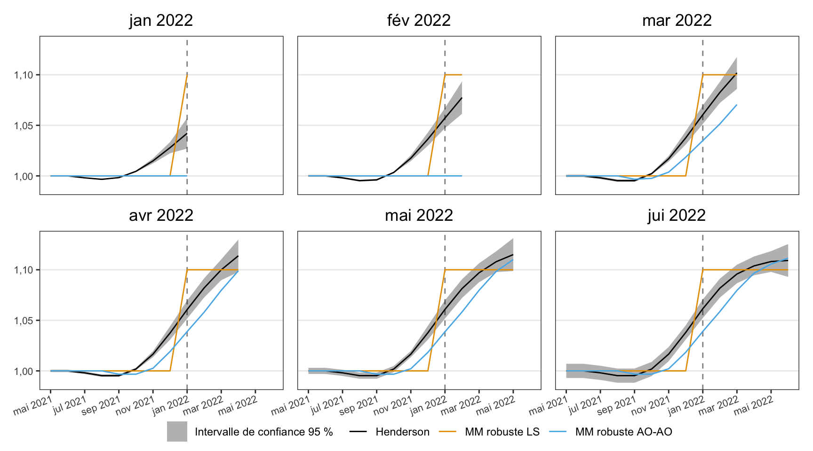
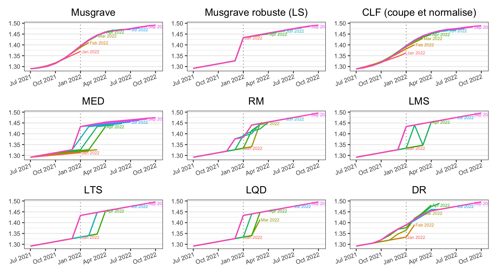
Note : Henderson : Henderson (estimation finale) et Musgrave (estimations intermédiaires) ; Henderson robuste : moyennes mobiles robustes de Henderson (estimation finale) et de Musgrave (estimations intermédiaires) ; CLF : cascade linear filter (estimation finale) et méthode « couper-et-normaliser » (estimations intermédiaires) ; MED : Médiane mobile ; RM : médiane répétée ; LMS : moindres carrés médians ; LTS : moindres carrés élagués ; LQD : moindres quartiles différenciés ; DR : Régression profonde.
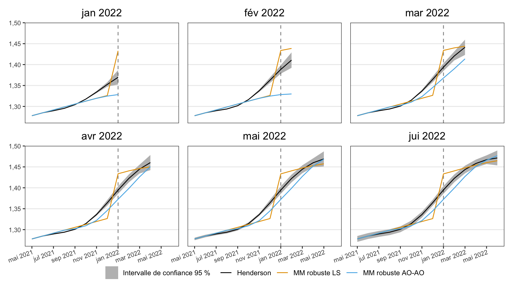
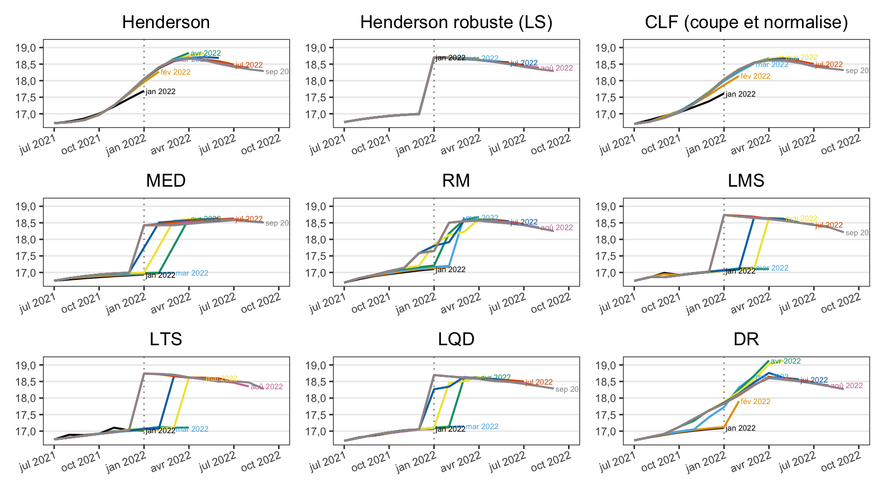
Note : Henderson : Henderson (estimation finale) et Musgrave (estimations intermédiaires) ; Henderson robuste : moyennes mobiles robustes de Henderson (estimation finale) et de Musgrave (estimations intermédiaires) ; CLF : cascade linear filter (estimation finale) et méthode « couper-et-normaliser » (estimations intermédiaires) ; MED : Médiane mobile ; RM : médiane répétée ; LMS : moindres carrés médians ; LTS : moindres carrés élagués ; LQD : moindres quartiles différenciés ; DR : Régression profonde.
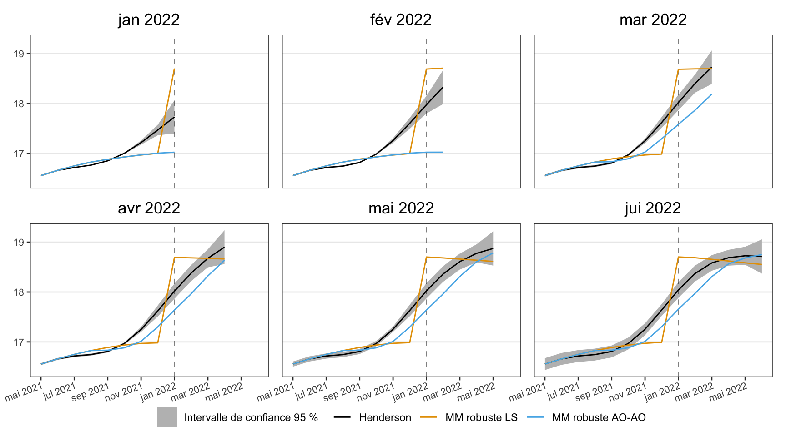
3.2 Séries réelles
Puisque les résultats sont similaires à ceux sur les données simulées, les performances des différentes méthodes sur des séries réelles lors d’un choc ponctuel (AO) et d’un choc permanent (LS) sont données dans l’annexe 5.3 : les moyennes mobiles classiques (Henderson/Musgrave et CLF) donnent de fortes révisions autour des chocs et ces révisions sont faibles avec les moyennes mobiles robustes. Contrairement aux données simulées, sur les données réelles, même lorsque la tendance semble être linéaire, les estimations intermédiaires issues des méthodes robustes peuvent être très erratiques, conduisant à des estimations parfois peu plausibles et des révisions importantes.
Dans cette section, nous nous concentrerons sur l’illustration d’autres cas :
Un choc ponctuel suivi d’un choc permanent (section 3.2.1) à partir de l’analyse des immatriculations de voitures particulières neuves, corrigée des variations saisonnières (CVS) et des jours ouvrables (CJO), publiée par l’Insee (série
010756763téléchargée en octobre 2024). Le choc ponctuel s’observe en août 2018, suivi d’un choc permanent en septembre 2018.La crise financière de 2008 (section 3.2.2) à partir des ventes au détail et services de restauration aux États-Unis. Les données issues de la base FRED-MD (McCracken et Ng 2016) contenant des séries économiques sur les États-Unis7 (série
RETAILx). Pour cette série la crise financière de 2008 peut s’étudier comme deux chocs permanents consécutifs en octobre et novembre 2008.La crise du COVID-19 (section 3.2.3) à partir l’indice de la production industrielle (IPI) dans l’industrie manufacturière CVS-CJO, publié par l’Insee (série
010768307publiée le 04 octobre 2024). Deux autres exemples sont donnés dans l’annexe 5.3.Un point de retournement qui n’est pas associé à un choc (section 3.2.4) à partir du niveau d’emploi aux États-Unis (série
CE16OVde la base FRED-MD). Un autre exemple est donné dans l’annexe 5.3.
Toutes ces séries sont représentées dans la figure 14.
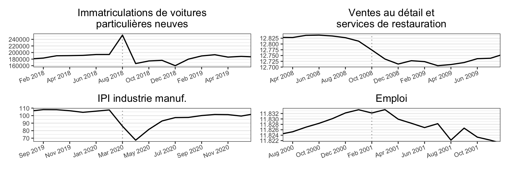
3.2.1 Choc ponctuel (AO) suivi d’un choc permanent (LS)
L’entrée en vigueur de la procédure d’essai mondiale harmonisée pour les véhicules légers (Worldwide harmonized Light vehicles Test Procedures, WLTP) en septembre 2018 a eu pour effet une forte hausse des immatriculations de voitures particulières neuves en août 2018 (choc ponctuel), les constructeurs ayant déstocké des modèles qui n’étaient plus autorisés à la vente à partir de cette date. À partir du mois de septembre, le niveau des immatriculations était plus faible par contre-coup de la hausse du mois d’août. Même si ce choc en niveau semble temporaire sur 5 mois (retour au niveau de juillet 2018 à partir de février), il est, par simplification, modélisé dans la construction des moyennes mobiles robustes comme un choc permanent.
Les méthodes robustes ne sont pas affectées par le choc ponctuel mais ne reproduisent pas le changement de niveau à la bonne date (figure 15). Les moyennes mobiles linéaires de Henderson et CLF ont des résultats similaires : fortes révisions en août 2018, un point de retournement détecté en avance (juillet 2018). Les moyennes mobiles robustes conduisent à peu de révisions autour des chocs. Lorsque l’on ne modélise que le choc ponctuel d’août (figure 16) un point de retournement est détecté en mars 2018, ce qui parait peu plausible.
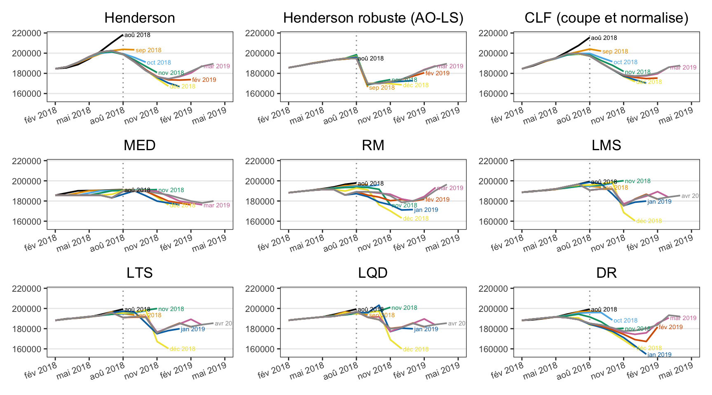
Note : Henderson : Henderson (estimation finale) et Musgrave (estimations intermédiaires) ; Henderson robuste : moyennes mobiles robustes de Henderson (estimation finale) et de Musgrave (estimations intermédiaires) ; CLF : cascade linear filter (estimation finale) et méthode « couper-et-normaliser » (estimations intermédiaires) ; MED : Médiane mobile ; RM : médiane répétée ; LMS : moindres carrés médians ; LTS : moindres carrés élagués ; LQD : moindres quartiles différenciés ; DR : Régression profonde.
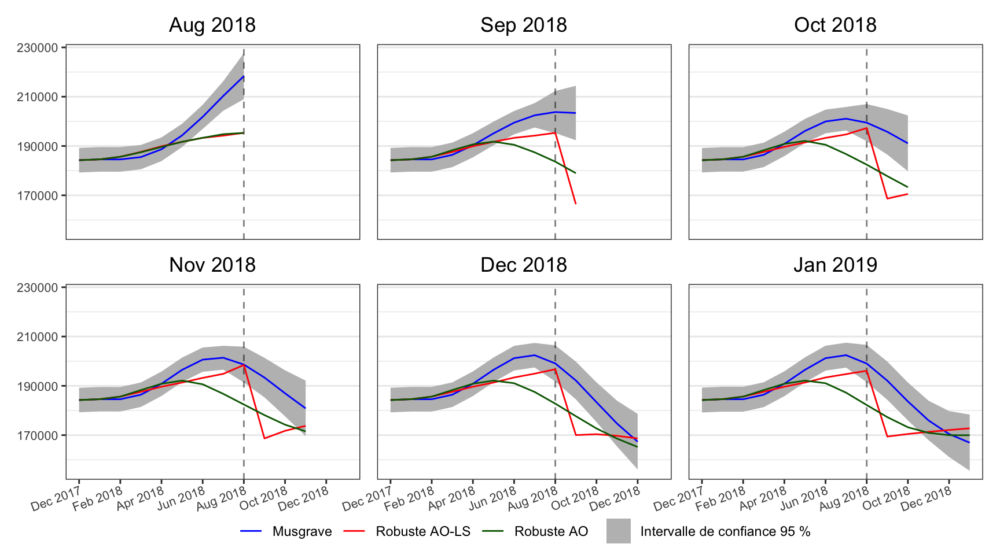
3.2.2 Crise financière de 2008 (deux chocs permanents consécutifs)
La crise financière de 2008 est illustrée à partir des ventes au détail et services de restauration. Sur cette série, on observe deux chocs consécutifs en niveau : en octobre et en novembre 2008. Seules deux méthodes robustes (médiane mobile et LMS) reproduisent ces chocs dans les estimations finales (figure 17) ; certaines estimations intermédiaires sont éloignées des estimations finales (par exemple pour les médianes mobiles ou les points de décembre 2008 et janvier 2009 RM, LMS, LTS et LQD) ce qui conduit à des révisions importantes. Les moyennes mobiles linéaires donnent des estimations avec relativement peu de révisions (en particulier pour les moyennes mobiles robustes) mais le retournement conjoncturel est détecté trop tôt pour Henderson et CLF. En temps-réel, si l’on ne sait pas que ce sont des chocs permanents, les chocs peuvent être modélisés comme deux chocs ponctuels dont on attribuerait l’effet à la tendance-cycle. Cette modélisation conduit à des révisions importantes entre novembre et décembre 2008 (figure 18). En mars 2009 (où l’on se doute que les chocs sont permanents et non ponctuels), l’utilisation de cette mauvaise spécifications donnent des estimations de la tendance-cycle proches des moyennes mobiles de Henderson avant octobre 2008 (avec un point de retournement qui est donc détecté trop tôt) et proches des moyennes mobiles robustes à deux chocs permanents après octobre 2008.
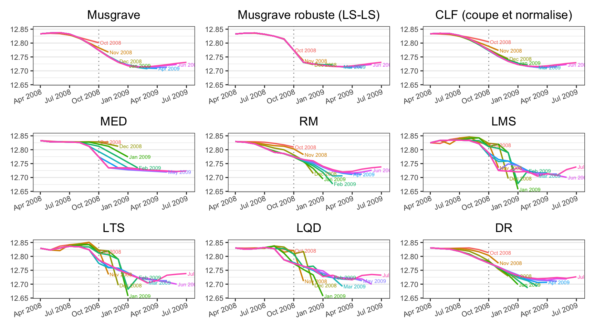
Note : Henderson : Henderson (estimation finale) et Musgrave (estimations intermédiaires) ; Henderson robuste : moyennes mobiles robustes de Henderson (estimation finale) et de Musgrave (estimations intermédiaires) ; CLF : cascade linear filter (estimation finale) et méthode « couper-et-normaliser » (estimations intermédiaires) ; MED : Médiane mobile ; RM : médiane répétée ; LMS : moindres carrés médians ; LTS : moindres carrés élagués ; LQD : moindres quartiles différenciés ; DR : Régression profonde.
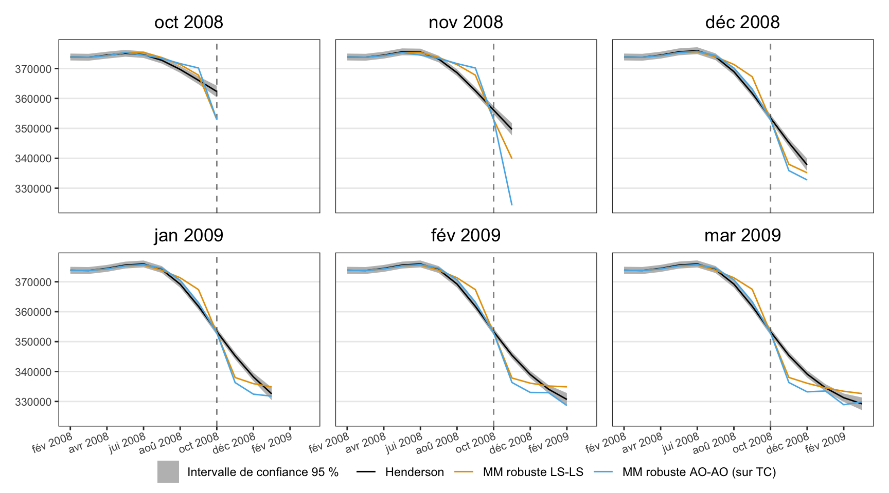
3.2.3 COVID-19
Le COVID-19 est illustré sur l’indice de la production industrielle (IPI) CVS-CJO dans l’industrie manufacturière. Sur cette série, on observe deux chocs négatifs en mars et avril 2020, suivis d’une remontée progressive jusqu’en juillet 2020 vers un niveau légèrement inférieur à celui d’avant crise. Pour cette période, il est attendu de l’estimation finale de la tendance-cycle qu’elle permette de détecter les deux points de retournement en février 2020 (pic) et avril 2020 (creux). Les méthodes robustes peinent à reproduire ces retournements : les estimations finales sont robustes aux chocs, les révisions sont importantes et les retournement conjoncturels détectés semblent plutôt provenir des périodes post-chocs, ce qui conduit à détecter les points de retournement avec décalage (figure 19) Les moyennes mobiles de Henderson et CLF conduisent, encore une fois, à détecter les points de retournement avec un décalage ; les révisions sont importantes autour des chocs (mars, mai et juin) et plus faibles pour les autres mois.
Pour la construction des moyennes mobiles robustes, même si l’on pourrait construire des régresseurs spécifiques, il a ici été choisi de rester sur la modélisation de chocs ponctuels et permanents ce qui permet de garder une approche simple et plus facilement généralisable à d’autres cas. La figure 20 compare les estimations des moyennes mobiles robustes construites en modélisant deux chocs ponctuels consécutifs (dont on attribuerait l’effet à la tendance-cycle plutôt qu’à l’irrégulier), deux chocs permanents consécutifs ou un choc ponctuel suivi d’un choc permanent. La modélisation de deux chocs permanents consécutifs en mars et avril 2020 permet de détecter les points de retournement aux bonnes dates, la reprise de la production en mai est détecté dès la première estimation. Ce n’est pas le cas de la modélisation par deux chocs ponctuels consécutifs : il faut attendre les estimations de juin 2020 pour reproduire le creux d’avril (les estimations de mai et juin donne une baisse entre avril et mai) et le pic de février n’est pas conservé. La modélisation d’un choc ponctuel suivi d’un choc permanent permet bien de tracer le pic d’avril et le creux d’avril mais un pic indésirable est créé en juin 2020. C’est donc la modélisation par deux chocs permanents consécutifs qui donne ici les meilleurs résultats.
D’autres exemples sont donnés dans l’annexe 5.3.3.
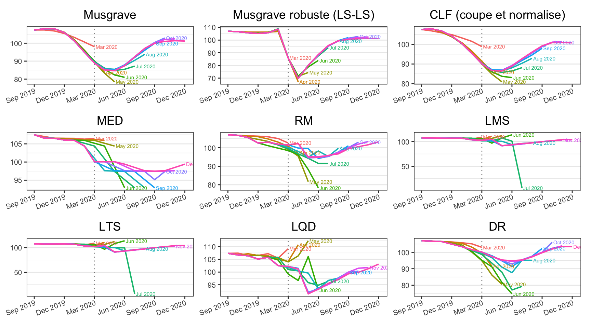
Note : Henderson : Henderson (estimation finale) et Musgrave (estimations intermédiaires) ; Henderson robuste : moyennes mobiles robustes de Henderson (estimation finale) et de Musgrave (estimations intermédiaires) ; CLF : cascade linear filter (estimation finale) et méthode « couper-et-normaliser » (estimations intermédiaires) ; MED : Médiane mobile ; RM : médiane répétée ; LMS : moindres carrés médians ; LTS : moindres carrés élagués ; LQD : moindres quartiles différenciés ; DR : Régression profonde.
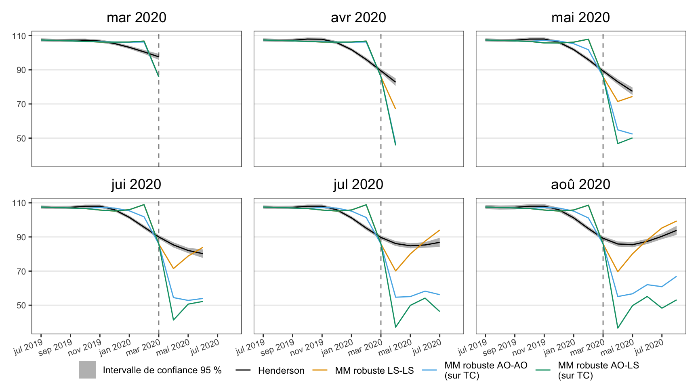
3.2.4 Points de retournement
Un point de retournement, non associé à un choc, est illustré à partir du niveau d’emploi aux États-Unis autour de février 2001. Parmi les méthodes robustes, seule la régression profonde (DR) permet de détecter le point de retournement à la bonne date (à partir des estimations de juin 2021, figure 21) : les médianes mobiles (MED) et les médianes répétées (RM) ne détectent aucun point de retournement et les autres méthodes le détecte en janvier 2001 (à partir des estimations de juillet 2001, pour les estimations antérieures il est bien détecté en février). En revanche, modéliser une tendance locale de degré 2 permet de détecter le point de retournement à la bonne date (annexe 5.4) Les révisions sont plus faibles pour les estimations issues de moyennes mobiles et le fait de considérer à tort le mois de février comme un choc ponctuel n’a pas d’impact sur les estimations. Les estimations issues des moyennes mobiles robustes restent dans l’intervalle de confiance des estimations des moyennes mobiles de Henderson (figure 22).
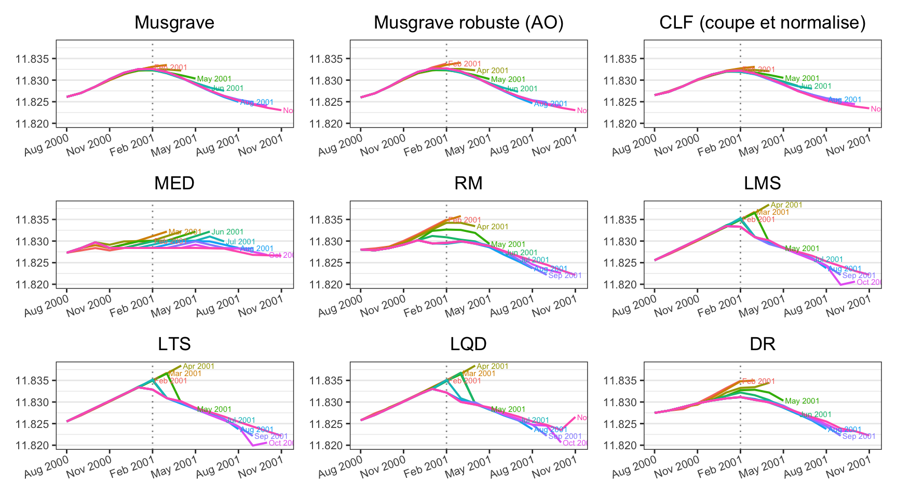
Note : Henderson : Henderson (estimation finale) et Musgrave (estimations intermédiaires) ; Henderson robuste : moyennes mobiles robustes de Henderson (estimation finale) et de Musgrave (estimations intermédiaires) ; CLF : cascade linear filter (estimation finale) et méthode « couper-et-normaliser » (estimations intermédiaires) ; MED : Médiane mobile ; RM : médiane répétée ; LMS : moindres carrés médians ; LTS : moindres carrés élagués ; LQD : moindres quartiles différenciés ; DR : Régression profonde.
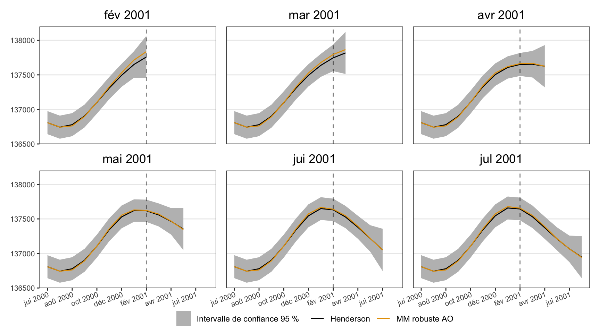
4 Conclusion
En conclusion, cette étude montre comment, à partir des moyennes mobiles de Henderson et de Musgrave (répandues pour l’extraction de la tendance-cycle) il est possible d’ajouter des régresseurs externe pour construire des moyennes mobiles avec une meilleure décomposition tendance-cycle et irrégulier. Cela permet notamment de modéliser des chocs ponctuels (dont l’effet est généralement associé à l’irrégulier) et des chocs permanents (dont l’effet est associé à la tendance-cycle).
Les moyennes mobiles linéaires classiques (Henderson, Musgrave, cascade linear filter…) vont naturellement conduire à des estimations biaisées : lors d’un choc permanent positif, la rupture va être lissée et la tendance-cycle va être sur-estimée avant le choc et sous-estimée après le choc ; lors d’un choc ponctuel (dont l’effet est attribué à l’irrégulier), la tendance-cycle va être sur ou sous-estimée autour du choc (en fonction du signe du choc). Cela va également amener à des fortes révisions des estimations autour des chocs. Lorsqu’un choc est associé à un point de retournement de l’économie (par exemple lors de la crise financière de 2008 ou lors de la pandémie du COVID-19), les estimations de la tendance-cycle vont conduire à un décalage dans la détection des points de retournement (contraction détectée en avance et reprise en retard), ce qui peut perturber l’utilisateur lors de l’analyse de ces séries. À l’inverse, la construction de moyennes mobiles robustes permettent de minimiser les révisions des chocs et de bien détecter les points de retournement. La comparaison entre moyennes mobiles robustes et classiques, à l’aide de la construction d’intervalles de confiance et d’une analyse économique, permet de valider la modélisation retenue. De plus, lorsque aucun choc n’est observée, l’utilisation à tort d’une moyenne mobile robuste donnera des résultats très proches des moyennes mobiles classiques et ne dégrade donc pas les résultats. En revanche, lors de l’estimation en temps réel, le choix d’une mauvaise spécification (par exemple choc ponctuel, affecté à l’irrégulier, plutôt que choc permanent, affecté à la tendance-cycle) peut entraîner des révisions importantes lorsque la bonne spécification est finalement retenue. Si l’on cherche à minimiser les révisions, en cas de doute sur la nature du choc il peut donc être préférable d’utiliser les moyennes mobiles linéaires classiques avant d’être sûr de la spécification à adopter.
Afin d’éviter le biais lié à la présence de points atypiques, le logiciel de désaisonnalisation X-13ARIMA-SEATS (où sont notamment utilisées les moyennes mobiles de Henderson et de Musgrave) possède plusieurs modules de correction des chocs : la série est d’abord pré-corrigée et les chocs sont à la fin réintroduit dans la bonne composante (saisonnalité, tendance-cycle ou irrégulier). Toutefois, les rares instituts qui publient des estimations de la tendance-cycle (comme Statistique Canada et l’Australian Bureau of Statistics) ne semblent pas utiliser le logiciel X-13ARIMA-SEATS pour l’estimation de cette composante et appliquent plutôt une moyenne mobile sur le série désaisonnalisées. Cela peut par exemple s’expliquer lorsque ce ne sont pas les mêmes équipes qui effectuent la désaisonnalisation et l’estimation de la tendance-cycle ou pour simplifier le processus. Même si ces modules de corrections peuvent être appliqués sur les séries désaisonnalisées (par exemple via un modèle RegARIMA), l’estimation de l’ampleur du choc dépend du modèle utilisé et de la période d’estimation retenue, ce qui augmente le risque de mauvaise spécification et l’incertitude autour des estimations. À l’inverse, l’approche proposée dans cet article garde les mêmes spécifications que celle des moyennes mobiles de Henderson et de Musgrave et, par construction, le nombre de périodes révisées ne dépend que de la longueur de la moyenne mobile.
Dans cette étude, les performances des moyennes mobiles linéaires sont également comparées à des méthodes non-linéaires robustes pour la plupart basées sur la médiane. Lorsque les tendances sont lisses et le bruit faible (par exemple sur des séries simulées), ces méthodes fournissent des bonnes alternatives aux méthodes classiques en étant robustes aux chocs ponctuels et en reproduisant, dans la tendance-cycle les chocs permanents (mais pour qu’ils soient reproduits à la bonne date il faut attendre l’estimation finale). Toutefois, sur des séries réelles, les révisions sont plus importantes (avec parfois des estimations intermédiaires non cohérentes), ce qui suggère, comme notamment indiqué par Gather, Schettlinger, et Fried (2006), d’utiliser des quantiles plus élevés que la médiane pour les estimations en temps réel. Par ailleurs, lorsque les points de retournement sont associés à des chocs (comme lors du COVID-19), en étant naturellement robustes aux choss, ces méthodes ne vont pas permettre d’estimer une tendance-cycle qui reproduirait les points de retournement.
En somme, pour l’analyse de la conjoncture et des points de retournement, l’utilisation de méthodes linéaires locales (telles que des moyennes mobiles) est à privilégier. Afin de mieux représenter la réalité économique et de minimiser les révisions, il est important d’avoir une analyse locale par série : en analysant les chocs et en les prenant en compte dans la construction des moyennes mobiles comme proposé dans cette étude ; ou encore en fixant localement les hyperparamètres utilisés dans les moyennes mobiles asymétriques (lorsque l’on ne possède pas assez de point dans le futur pour utiliser une moyenne mobile symétrique), comme suggéré par Quartier-la-Tente (2024), pour réduire les révisions en évitant des biais systématiques lorsque la tendance est localement linéaire (par exemple reprise d’activité progressive après un choc). Toutefois, pour la production de données, il peut être difficile d’avoir le temps d’analyser chaque série pour déterminer les chocs. Il peut alors être intéressant d’étudier des procédures automatiques pour identifier ces chocs, par exemple via des modèles ad hoc (du type modèles RegARIMA) ou bien en reproduisant le processus de lissage des moyennes mobiles par une modélisation plus générale (par exemple modélisation espace-état).
5 Annexes
5.1 Moyennes mobiles utilisées
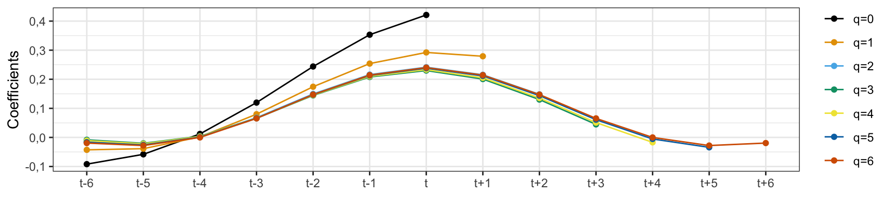
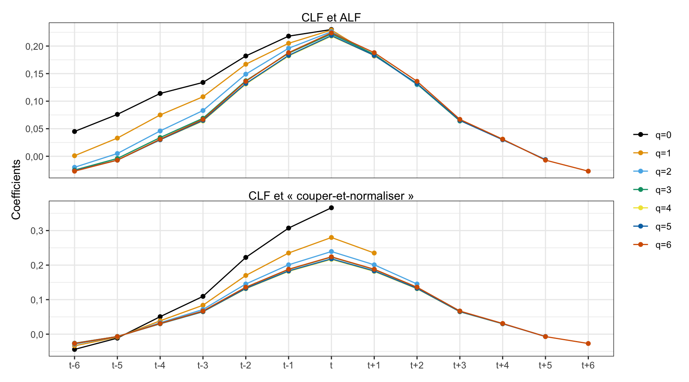
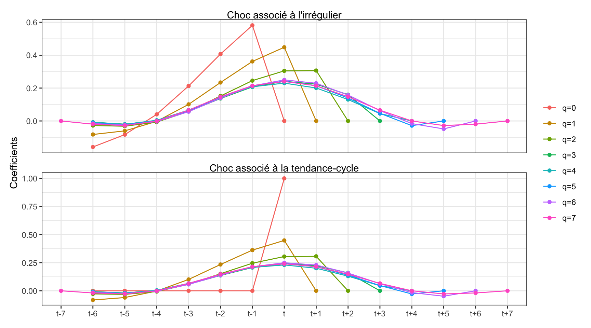
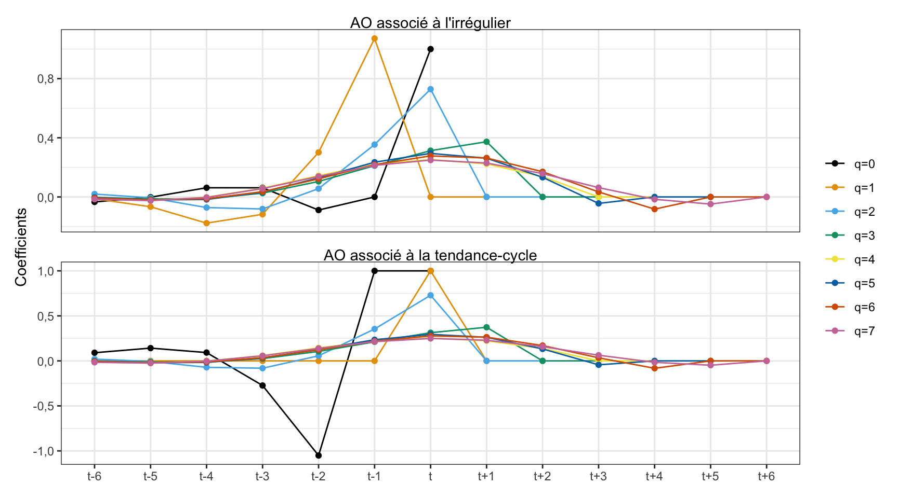
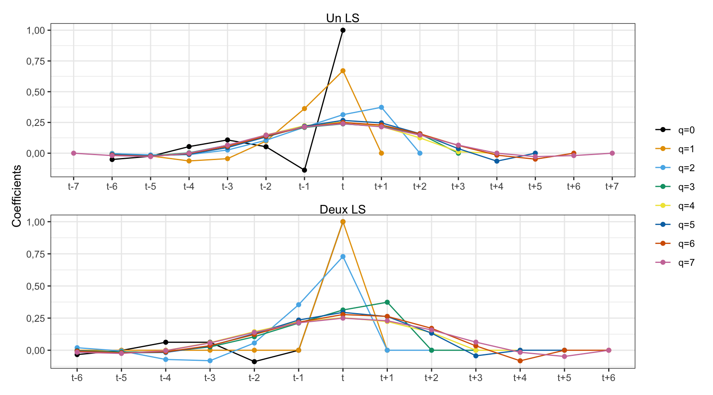
5.2 Calcul du degré de liberté de la variance
Soient \(\boldsymbol\theta = \begin{pmatrix}\theta_{-p},\dots,\theta_f\end{pmatrix}\) et \(\boldsymbol \Delta = \transp{(\boldsymbol I - \boldsymbol H)}(\boldsymbol I - \boldsymbol H\boldsymbol)\) avec : \[ \boldsymbol H=\begin{pmatrix} &&\boldsymbol0_{p\times n} \\ \theta_{-p} & \cdots & \theta_f & 0 & \cdots\\ 0 & \theta_{-p} & \cdots & \theta_f & 0 & \cdots \\ & \ddots &&&\ddots\\ 0 &\cdots&0& \theta_{-p} & \cdots & \theta_f \\ &&\boldsymbol0_{f\times n} \end{pmatrix}\text{ et } \boldsymbol I = \begin{pmatrix} &\boldsymbol0_{p\times n} \\ \boldsymbol 0_{(n-p-f)\times p} &\boldsymbol I_{n-p-f} & \boldsymbol 0_{(n-p-f)\times f} \\ &\boldsymbol0_{f\times n} \end{pmatrix}, \] où \(\boldsymbol 0_{p\times n}\) est la matrice de taille \(p\times n\) ne contenant que de zéros et \(\boldsymbol I_{n-p-f}\) la matrice identité de taille \(n-p-f.\)
L’objectif de cette annexe est de montrer que le calcul de \(\tr(\boldsymbol \Delta^2)\) peut se simplifier par le produit d’une matrice de taille \(1\times (p+f+1)\) et d’une matrice de taille \((p+f+1)\times(p+f+1)\), ce qui permet de réduire le temps de calcul du degré de liberté de la loi de Student utilisée pour la construction d’intervalles de confiance : \[ \tr({\boldsymbol \Delta}^2)=(n-(p+f))L_0^2+2\sum_{k=1}^{p+f}(n-(p+f)-k)L_k^2 \] où \(L_0,\dots,L_{p+f}\) sont définis par : \[ \begin{pmatrix}w_{-p} & \cdots & w_f\end{pmatrix} \begin{pmatrix} w_{-p} &0 & 0 &\cdots& 0 \\ w_{-p+1} & w_{-p} & 0 & \ddots & \vdots \\ w_{-p+2} & w_{-p+1}& w_{-p} & \ddots & \vdots\\ \vdots & \vdots & \vdots & \ddots &\vdots \\ w_f & w_{f-1} & w_{f-2}&\ddots&w_{-p}\\ \end{pmatrix}=\begin{pmatrix} L_0 & \cdots & L_{p+f} \end{pmatrix} \] avec \(\boldsymbol w = \begin{pmatrix}w_{-p},\dots,w_f\end{pmatrix}\) la moyenne mobile telle que \(w_i=\1_{i=0}-\theta_i\).
Soient \(i,j\in\{1,\dots,n\},\) posons par convention \(w_i=0\) pour \(i\notin[-p,f].\) Notons \(\boldsymbol \Gamma=\boldsymbol I -\boldsymbol H.\) On a \({\boldsymbol H}_{i,j}=\theta_{i-j}\1_{i\in[p+1,n-f]}\) et donc \({\boldsymbol \Gamma}_{i,j}=w_{i-j}\1_{i\in[p+1,n-f]}\) et ensuite : \[\begin{align*} (\transp{{\boldsymbol \Gamma}}{\boldsymbol \Gamma})_{i,j} &=\sum_{k=1}^n{\boldsymbol \Gamma}_{k,i}{\boldsymbol \Gamma}_{k,j}=\sum_{k=1}^nw_{k-i}w_{k-j} \1_{(i,j)\in[p+1,n-f]^2}\\ &=\sum_{k=-p}^fw_{k}w_{i-j+k}\1_{(i,j)\in[p+1,n-f]^2}. \end{align*}\] Puis : \[\begin{align*} ((\transp{{\boldsymbol \Gamma}}{\boldsymbol \Gamma})^2)_{i,i} &= \sum_{j=1}^n(\transp{{\boldsymbol \Gamma}}{\boldsymbol \Gamma})_{i,j}(\transp{{\boldsymbol \Gamma}}{\boldsymbol \Gamma})_{j,i}\\ &=\sum_{j=1}^n(\transp{{\boldsymbol \Gamma}}{\boldsymbol \Gamma})_{i,j}^2\text{ car la matrice }\transp{{\boldsymbol \Gamma}}{\boldsymbol \Gamma}\text{ est symétrique} \\ &=\sum_{j=1}^n\left(\sum_{k=-p}^fw_{k}w_{i-j/k}\1_{(i,j)\in[p+1,n-f]^2}\right)^2\\ &=\sum_{j=p}^{n-f}\left(\sum_{k=-p}^fw_{k}w_{i-j+k}\right)^2\1_{i\in[p+1,n-f]}. \end{align*}\] Donc \(((\transp{{\boldsymbol \Gamma}}{\boldsymbol \Gamma})^2)_{i,i} = 0\) si \(i\notin [p+1,n-f].\) Pour \(i\in[p+1,n-f],\) comme pour tout \(k\in [-p,f]\) on a \(w_{i-j+k} =0\) si \(j<i-(f+p)\) ou si \(j>i-(f+p)\), il vient : \[\begin{align*} ((\transp{{\boldsymbol \Gamma}}{\boldsymbol \Gamma})^2)_{i,i} &= \sum_{j=\max(i-(f+p),1)}^{\min(i+(f+p),n)}\left(\sum_{k=-p}^fw_{k}w_{i-j+k}\right)^2 \\ &=\sum_{j=-(f+p)}^{f+p}\left(\sum_{k=-p}^fw_{k}w_{k-j}\right)^2\1_{j\in [1-i,n-i]} \\ &=\sum_{j=-(f+p)}^{f+p}\left(L_{|j|}\right)^2\1_{j\in [1-i,n-i]}\text{ par symétrie autour de }0. \end{align*}\] En somme : \[\begin{align*} \tr({\boldsymbol \Delta^2})& = \sum_{i=p}^{n-f} \sum_{j=-(f+p)}^{f+p}\left(L_{|j|}\right)^2\1_{j\in [1-i,n-i]} \\ &= (n-(p+f))L_0^2+2(n-(p+f)-1)L_1^2 + 2(n-(p+f)-2)L_2^2 +\\ &\phantom{=}\dots+2(n-2(p+f))L_{p+f}^2 \\ &=(n-(p+f))L_0^2+2\sum_{k=1}^{p+f}(n-(p+f)-k)L_k^2. \end{align*}\]
Cette optimisation computationnelle a ensuite été implémentée dans la fonction rjd3filters::confint_filter().
5.3 Autres exemples sur des séries réelles
5.3.1 Chocs ponctuels (additive outlier, AO)
Les chocs ponctuels (additive outlier, AO) sont illustrés sur l’indice de la production industrielle (IPI) dans la construction de véhicules automobiles, corrigé des variations saisonnières (CVS) et des jours ouvrables (CJO), publié par l’Insee (série 010768140 publiée le 04 octobre 2024). Trois chocs ponctuels s’observent clairement sur les mois d’août de 1998, 1999 et 2004 (figure 28).
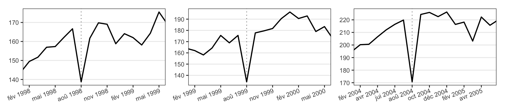
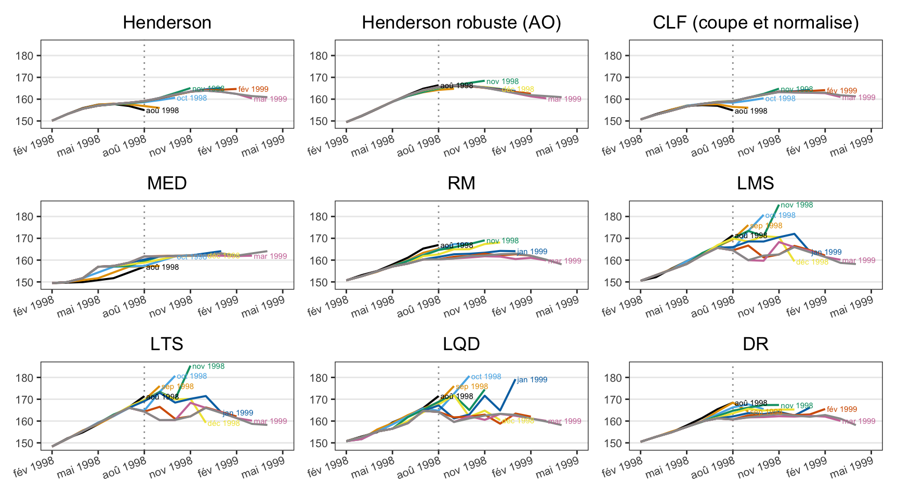
Note : Henderson : Henderson (estimation finale) et Musgrave (estimations intermédiaires) ; Henderson robuste : moyennes mobiles robustes de Henderson (estimation finale) et de Musgrave (estimations intermédiaires) ; CLF : cascade linear filter (estimation finale) et méthode « couper-et-normaliser » (estimations intermédiaires) ; MED : Médiane mobile ; RM : médiane répétée ; LMS : moindres carrés médians ; LTS : moindres carrés élagués ; LQD : moindres quartiles différenciés ; DR : Régression profonde.
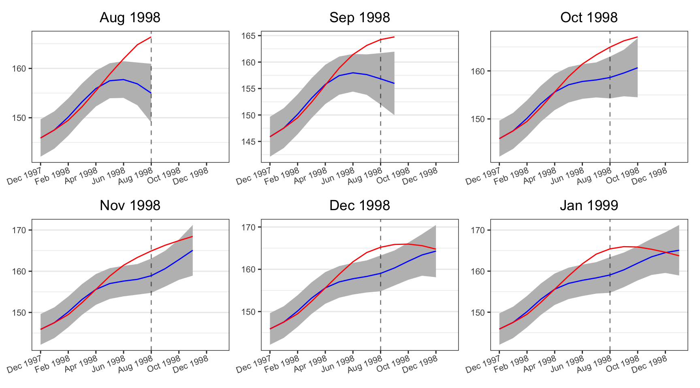
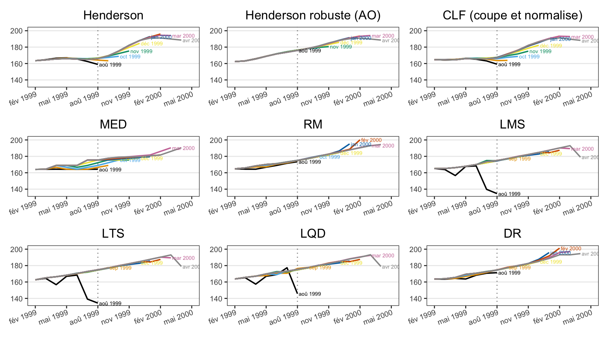
Note : Henderson : Henderson (estimation finale) et Musgrave (estimations intermédiaires) ; Henderson robuste : moyennes mobiles robustes de Henderson (estimation finale) et de Musgrave (estimations intermédiaires) ; CLF : cascade linear filter (estimation finale) et méthode « couper-et-normaliser » (estimations intermédiaires) ; MED : Médiane mobile ; RM : médiane répétée ; LMS : moindres carrés médians ; LTS : moindres carrés élagués ; LQD : moindres quartiles différenciés ; DR : Régression profonde.
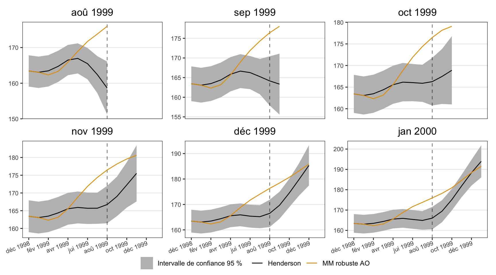
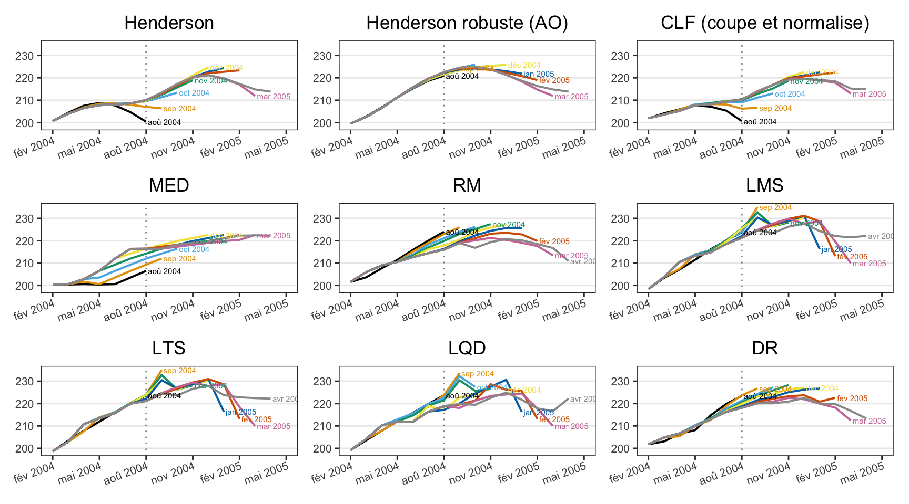
Note : Henderson : Henderson (estimation finale) et Musgrave (estimations intermédiaires) ; Henderson robuste : moyennes mobiles robustes de Henderson (estimation finale) et de Musgrave (estimations intermédiaires) ; CLF : cascade linear filter (estimation finale) et méthode « couper-et-normaliser » (estimations intermédiaires) ; MED : Médiane mobile ; RM : médiane répétée ; LMS : moindres carrés médians ; LTS : moindres carrés élagués ; LQD : moindres quartiles différenciés ; DR : Régression profonde.
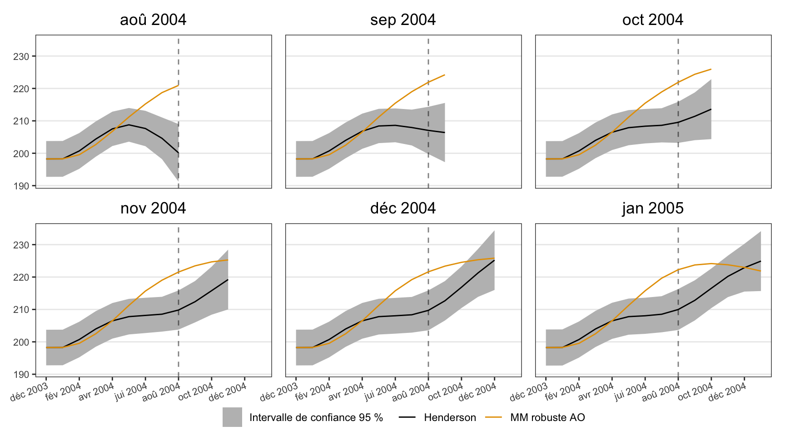
5.3.2 Choc permanent (level shift, LS)
Les chocs permanents (level shift, LS) sont illustrés sur l’indice de la production industrielle (IPI) dans l’extraction de pétrole brut, corrigé des variations saisonnières (CVS) et des jours ouvrables (CJO), publié par l’Insee (série 010767578) le 04 octobre 2024 (données alors disponibles jusqu’en août 2024). Un choc permanent s’observe en juin 2010. Pour la construction des intervalles de confiance, la série est tronquée pour ne prendre que les valeurs après janvier 2001 avant d’éviter que le début de la série, dont le profil est assez différent de celui sur la fin de la série, n’augmente l’estimation de la variance de l’irrégulier.
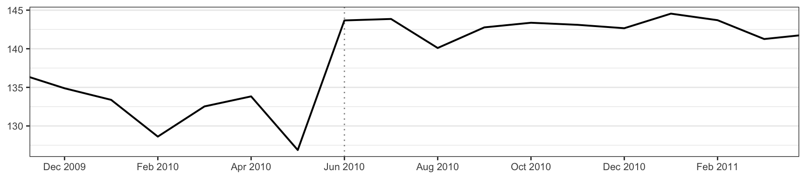
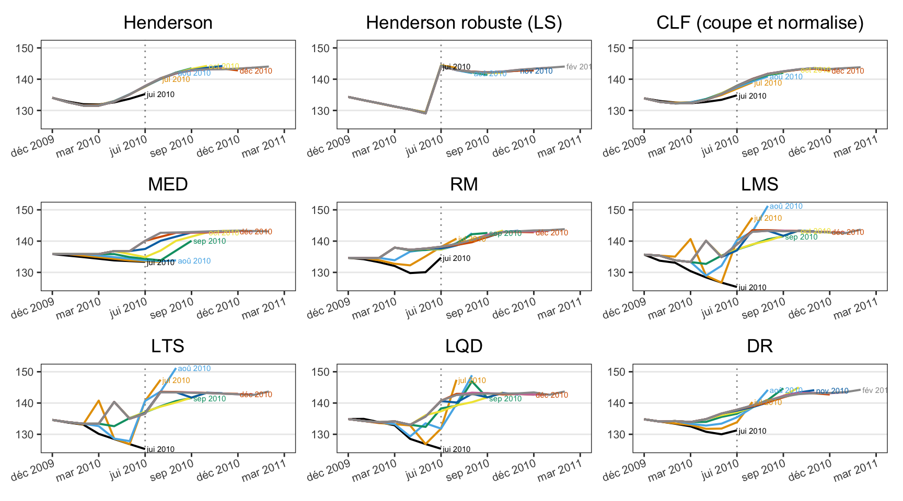
Note : Henderson : Henderson (estimation finale) et Musgrave (estimations intermédiaires) ; Henderson robuste : moyennes mobiles robustes de Henderson (estimation finale) et de Musgrave (estimations intermédiaires) ; CLF : cascade linear filter (estimation finale) et méthode « couper-et-normaliser » (estimations intermédiaires) ; MED : Médiane mobile ; RM : médiane répétée ; LMS : moindres carrés médians ; LTS : moindres carrés élagués ; LQD : moindres quartiles différenciés ; DR : Régression profonde.
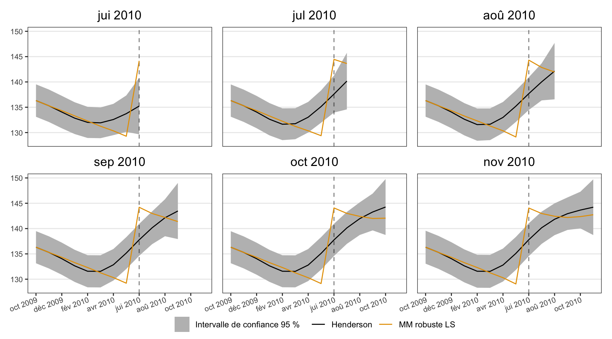
5.3.3 COVID-19
Deux autres exemples de l’estimation de la tendance-cycle pendant le COVID-19 sont données à partir du niveau d’emploi (série CE16OV) et des ventes au détail et services de restauration (série `RETAILx) aux États-Unis, séries issues de la base FRED-MD. Les points de retournement officiels de la datation du National Bureau of Economic Research (NBER) sont en février et avril 20208. Pour l’emploi le retour à la normal est progressif à partir d’avril 2020 alors qu’il est rapide pour les ventes au détail et services de restauration (figure 38).
Comme pour l’IPI dans l’industrie manufacturière, les méthodes robustes effacent le choc (figures 39 et 41), ce qui ne permet pas d’analyser les points de retournement. Les moyennes mobiles linéaires classiques (Henderson/Musgrave et CLF) détectent les points de retournement avec un décalage : pic en octobre 2019 et creux en avril 2020 pour les ventes au détail et services de restauration et juin 2020 pour l’emploi. Pour les moyennes mobiles robustes, le choc est modélisé par deux chocs permanents en mars et avril 2020. Les révisions sont faibles et cela permet de bien détecter les deux retournement conjoncturels contrairement aux moyennes mobiles robustes où l’on considère mars et avril 2020 comme des chocs ponctuels et associant le choc à la tendance-cycle (figures 40 et 42).
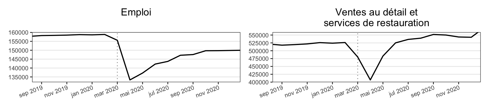
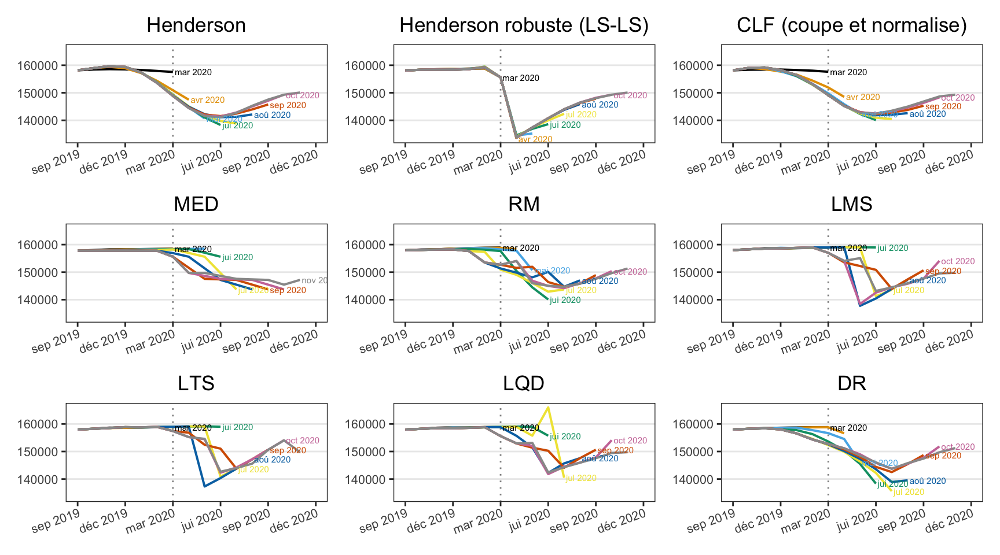
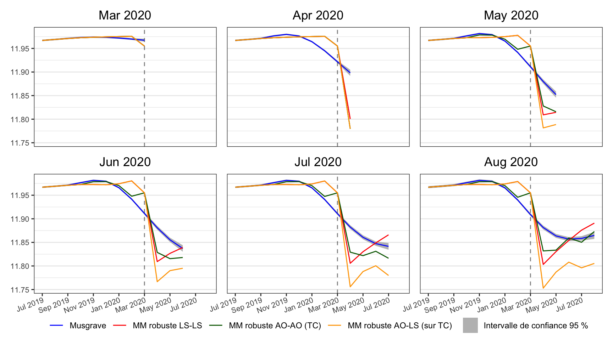
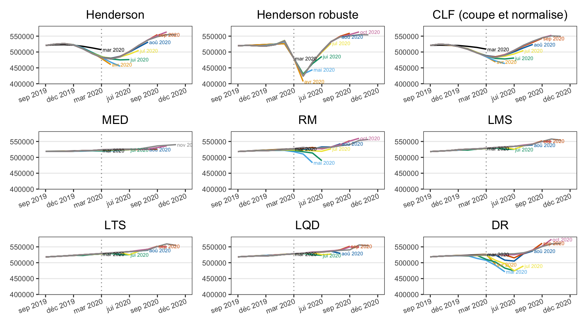
Note : Henderson : Henderson (estimation finale) et Musgrave (estimations intermédiaires) ; Henderson robuste : moyennes mobiles robustes de Henderson (estimation finale) et de Musgrave (estimations intermédiaires) ; CLF : cascade linear filter (estimation finale) et méthode « couper-et-normaliser » (estimations intermédiaires) ; MED : Médiane mobile ; RM : médiane répétée ; LMS : moindres carrés médians ; LTS : moindres carrés élagués ; LQD : moindres quartiles différenciés ; DR : Régression profonde.
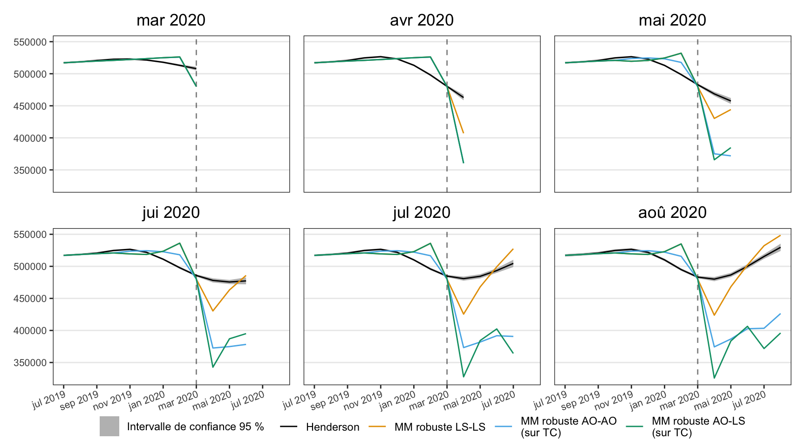
5.3.4 Points de retournement
Un autre exemple de point de retournement est illustré à partir des ventes au détail et services de restauration aux États-Unis (série RETAILx de la base FRED-MD) autour du point de retournement de novembre 2007.
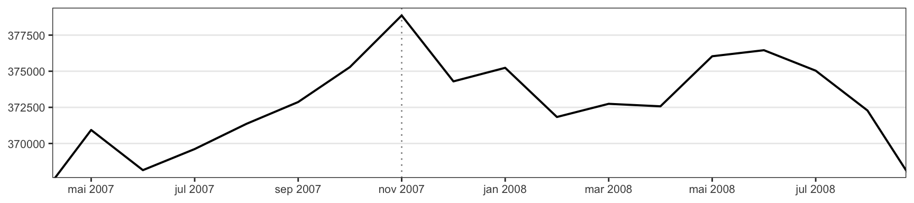
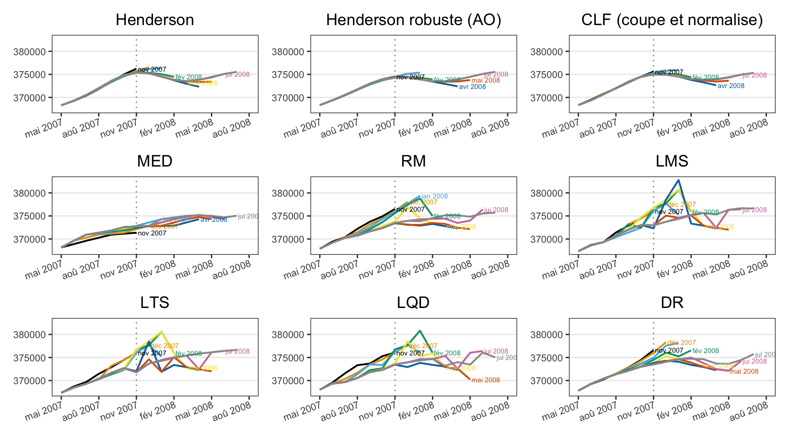
Note : Henderson : Henderson (estimation finale) et Musgrave (estimations intermédiaires) ; Henderson robuste : moyennes mobiles robustes de Henderson (estimation finale) et de Musgrave (estimations intermédiaires) ; CLF : cascade linear filter (estimation finale) et méthode « couper-et-normaliser » (estimations intermédiaires) ; MED : Médiane mobile ; RM : médiane répétée ; LMS : moindres carrés médians ; LTS : moindres carrés élagués ; LQD : moindres quartiles différenciés ; DR : Régression profonde.
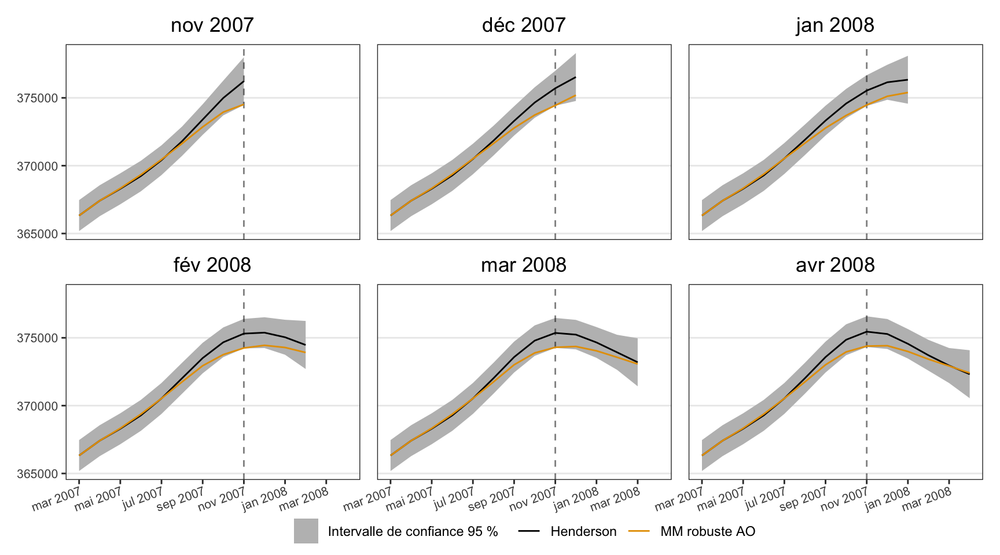
5.4 Moindres carrés médians (LMS) et moindres carrés élagués (LTS) avec une tendance de degré 2
Cette annexe présente les résultats des estimations de la réimplémentation des processus d’estimations locale des moindres carrés médians (LMS, figure 46) et moindres carrés élagués (LTS, figure 47) avec une tendance de degré 2.
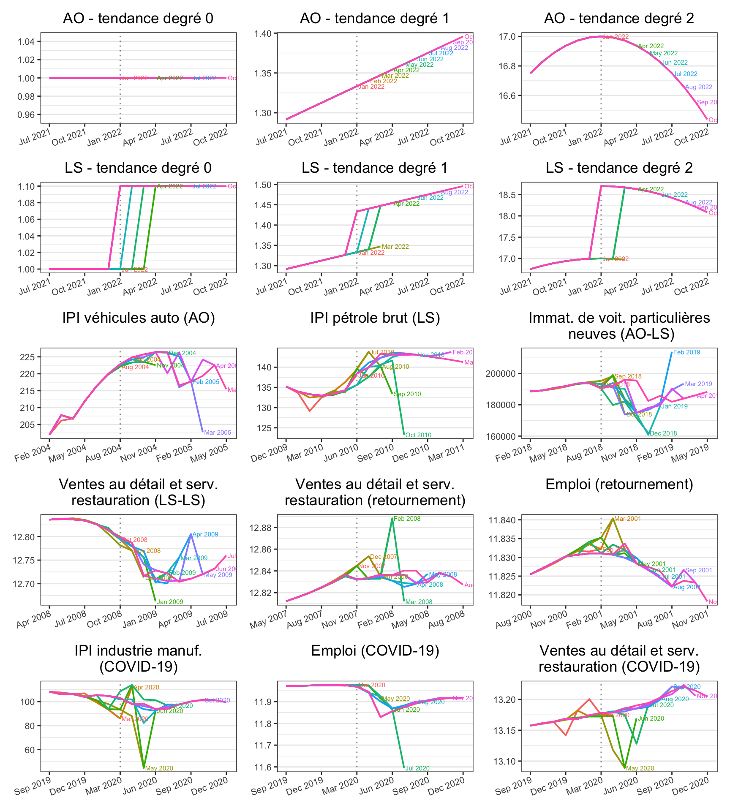
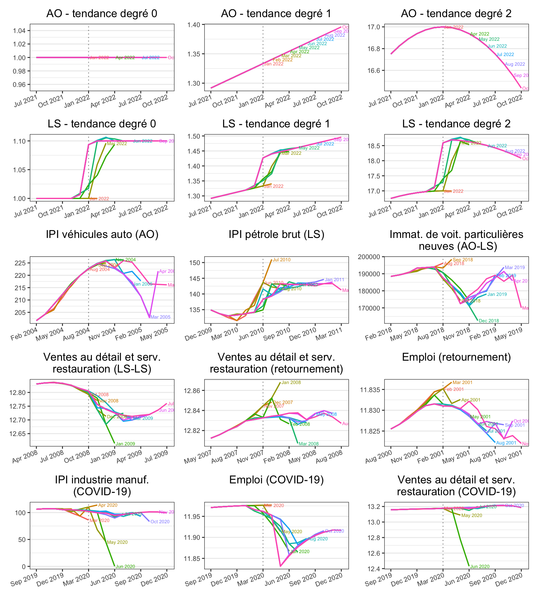
Bibliographie
Christophe Croux, Peter J. Rousseeuw, et Ola Hössjer. 1994. « Generalized S-Estimators ». Journal of the American Statistical Association 89 (428): 1271‑81. https://doi.org/10.1080/01621459.1994.10476867.
Dagum, Estela Bee. 1996. « A new method to reduce unwanted ripples and revisions in trend-cycle estimates from X-11-ARIMA ». Survey Methodology 22: 77‑84.
Dagum, Estela Bee, et Alessandra Luati. 2009. « A Cascade Linear Filter to Reduce Revisions and False Turning Points for Real Time Trend-Cycle Estimation ». Econometric Reviews 28 (1-3): 40‑59. https://doi.org/10.1080/07474930802387837.
Ferrara, Laurent. 2009. « Caractérisation et datation des cycles économiques en zone euro ». Revue économique 60 (3): 703‑12. https://doi.org/10.3917/reco.603.0703.
Fried, Roland, Karen Schettlinger, et Matthias Borowski. 2024. robfilter: Robust Time Series Filters. https://doi.org/10.32614/CRAN.package.robfilter.
Gather, Ursula, Karen Schettlinger, et Roland Fried. 2006. « Online signal extraction by robust linear regression ». Computational Statistics 21 (1): 33‑51. https://doi.org/10.1007/s00180-006-0249-8.
Gray, Alistair G, et Peter J Thomson. 2002. « On a Family of Finite Moving-Average Trend Filters for the Ends of Series ». Journal of Forecasting 21 (2): 125‑49. https://doi.org/10.1002/for.817.
Henderson, Robert. 1916. « Note on graduation by adjusted average ». Transactions of the actuarial society of America 17: 43‑48.
Ladiray, Dominique, et Alain Quartier-la-Tente. 2018. « Du bon usage des modèles Reg-ARIMA en désaisonnalisation ». XIIIèmes Journées de Méthodologie Statistique de l’Insee.
Ladiray, Dominique, et Benoît Quenneville. 2011. Seasonal Adjustment with the X-11 Method. Springer. https://doi.org/10.1007/978-1-4613-0175-2.
Loader, Clive. 1999. Local regression and likelihood. New York: Springer-Verlag. https://doi.org/10.1007/b98858.
Matthews, Steve. 2022. « Trend-Cycle Estimation in Topsy-Turvy Times ». https://community.amstat.org/governmentstatisticssection/conferences/pastconference210/seasonal-adjustment-practitioners-workshop-2022.
McCracken, Michael W., et Serena Ng. 2016. « FRED-MD: A Monthly Database for Macroeconomic Research ». Journal of Business & Economic Statistics 34 (4): 574‑89. https://doi.org/10.1080/07350015.2015.1086655.
Monsell, Brian C. 2007. « The X-13A-S seasonal adjustment program ». In Proceedings of the Federal Committee On Statistical Methodology Research Conference, November 5–7, 2007, 515. Arlington, Virginia.
Musgrave, John C. 1964. « A set of end weights to end all end weights ». US Census Bureau [custodian].
Palate, Jean, et Alain Quartier-la-Tente. 2025. rjd3filters: Trend-Cycle Extraction with Linear Filters.
Proietti, Tommaso, et Alessandra Luati. 2008. « Real time estimation in local polynomial regression, with application to trend-cycle analysis ». Ann. Appl. Stat. 2 (4): 1523‑53. https://doi.org/10.1214/08-AOAS195.
Quartier-la-Tente, Alain. 2024. « Improving real-time trend estimates using local parametrisation of polynomial regression filters ». Journal of Official Statistics 40 (4): 685‑715. https://doi.org/10.1177/0282423X241283207.
———. 2025. publishTC: Tools to help publish the trend-cycle.
Rousseeuw, P. 1985. « Multivariate estimation with high breakdown point ». Mathematical Statistics and Applications B. https://doi.org/10.2307/2288718.
Rousseeuw, Peter J. 1984. « Least median of squares regression ». Journal of the American statistical association 79 (388): 871‑80.
Rousseeuw, Peter J., et Mia Hubert. 1999. « Regression Depth ». Journal of the American Statistical Association 94 (446): 388‑402. https://doi.org/10.1080/01621459.1999.10474129.
Siegel, Andrew F. 1982. « Robust regression using repeated medians ». Biometrika 69 (1): 242‑44. https://doi.org/10.2307/2335877.
Trewin, Dennis. 2003. « A guide to interpreting time series - Monitoring trends ». Australian Bureau of Statistics Information Paper. https://www.abs.gov.au/AUSSTATS/abs@.nsf/Lookup/1349.0Main+Features12003?OpenDocument.
Venables, W. N., et B. D. Ripley. 2002. Modern Applied Statistics with S. Fourth. New York: Springer. https://www.stats.ox.ac.uk/pub/MASS4/.
Zellner, Arnold, Chansik Hong, et Chung-ki Min. 1991. « Forecasting turning points in international output growth rates using Bayesian exponentially weighted autoregression, time-varying parameter, and pooling techniques ». Journal of Econometrics 49 (1): 275‑304. https://doi.org/10.1016/0304-4076(91)90016-7.
Notes de bas de page
Dans cet article, on ne cherche donc pas à estimer séparément la tendance et le cycle, associée à des méthodes de filtrage de type Hodrick-Prescott ou Baxter-King, qui sont plutôt utilisées pour analyser les points de retournement dans le cycle de croissance (voir Ferrara (2009) pour une description des différents cycles économiques).↩︎
Cela revient à supposer que le biais d’approximation de la tendance-cycle par un polynôme local est nul.↩︎
Nous n’avons pas trouvé d’autres fonctions permettant d’utiliser les autres méthodes, même si elles pourraient être réimplémentées facilement.↩︎
Voir par exemple https://www.statcan.gc.ca/fr/quo/bdd/tendance-cycle.↩︎
Sur une série mensuelle de 19 ans (\(n=228\)), en utilisant la moyenne mobile de Henderson de 13 termes (\(p=f=6\)), le temps de calcul \(\nu\) est d’en moyenne 0,11 seconde (sur 1 000 évaluations). Il est divisé d’environ 350 en utilisant la formule proposée dans cet article (environ 0,31 milliseconde) et d’environ 5 800 en utilisant l’approximation \(\nu\simeq \tr(\boldsymbol \Delta)\) (environ 0,02 milliseconde).↩︎
C’est ce qui a été implémenté dans la fonction
publishTC::henderson_robust_smoothing(local_icr = TRUE).↩︎Les séries étudiées correspondent à la base publiée en novembre 2022.↩︎
https://www.nber.org/research/data/us-business-cycle-expansions-and-contractions↩︎